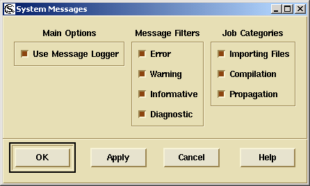
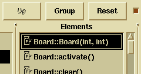

DIScover 7.5
User Guide for UNIX
Contains Java™ software developed by Sun Microsystems, Inc. © Copyright Sun Microsystems, Inc. All Rights
Reserved. Java and Java-based marks are trademarks or registered trademarks of Sun Microsystems, Inc. in the United
States and other countries.


Table of Contents
Chapters
1
Welcome to DIScover. . . . . . . . . . 1
About This Guide . . . . . . . . . . . . . . . . . . . . . . . . . . . . . . . . . . . . . . . . . . . 2
Related Documentation . . . . . . . . . . . . . . . . . . . . . . . . . . . . . . . . . . . . . . 4
Typographical Conventions . . . . . . . . . . . . . . . . . . . . . . . . . . . . . . . . . . 6
What’s New in This Release . . . . . . . . . . . . . . . . . . . . . . . . . . . . . . . . . . 7
Roles . . . . . . . . . . . . . . . . . . . . . . . . . . . . . . . . . . . . . . . . . . . . . . . . . . . . . . 7
Assumptions . . . . . . . . . . . . . . . . . . . . . . . . . . . . . . . . . . . . . . . . . . . . . . . 7
Getting Help . . . . . . . . . . . . . . . . . . . . . . . . . . . . . . . . . . . . . . . . . . . . . . . 8
Professional Services . . . . . . . . . . . . . . . . . . . . . . . . . . . . . . . . . . . . . . . . 9
Documentation Feedback . . . . . . . . . . . . . . . . . . . . . . . . . . . . . . . . . . . 10
Where To Go From Here . . . . . . . . . . . . . . . . . . . . . . . . . . . . . . . . . . . . 11
2
Understanding DIScover . . . . . . . . . . . . . . . . . . . . . . 13
DIScover Overview . . . . . . . . . . . . . . . . . . . . . . . . . . . . . . . . . . . . 14
Features and Benefits . . . . . . . . . . . . . . . . . . . . . . . . . . . . . . . . . . . 14
Core Concepts . . . . . . . . . . . . . . . . . . . . . . . . . . . . . . . . . . . . . . . . . . . . . 15
Repository . . . . . . . . . . . . . . . . . . . . . . . . . . . . . . . . . . . . . . . . . . . . 15
Information Model . . . . . . . . . . . . . . . . . . . . . . . . . . . . . . . . . . . . . 15
Project . . . . . . . . . . . . . . . . . . . . . . . . . . . . . . . . . . . . . . . . . . . . . . . . 16
Model Server . . . . . . . . . . . . . . . . . . . . . . . . . . . . . . . . . . . . . . . . . . 16
Build Server . . . . . . . . . . . . . . . . . . . . . . . . . . . . . . . . . . . . . . . . . . . 16
Entities and Instances . . . . . . . . . . . . . . . . . . . . . . . . . . . . . . . . . . . 16
Queries . . . . . . . . . . . . . . . . . . . . . . . . . . . . . . . . . . . . . . . . . . . . . . . 17
DIScover Components . . . . . . . . . . . . . . . . . . . . . . . . . . . . . . . . . 17
Model Browser . . . . . . . . . . . . . . . . . . . . . . . . . . . . . . . . . . . . . . . . 17
Developer Xpress . . . . . . . . . . . . . . . . . . . . . . . . . . . . . . . . . . . . . . 18
Access . . . . . . . . . . . . . . . . . . . . . . . . . . . . . . . . . . . . . . . . . . . . . . . . 18
DIScover in the Enterprise Environment . . . . . . . . . . . . . . . . . . 19
3
Getting Started With DIScover . . . . . . . . . . . . . . . . . 23
System Requirements . . . . . . . . . . . . . . . . . . . . . . . . . . . . . . . . . . . . . . . 24
Supported Languages . . . . . . . . . . . . . . . . . . . . . . . . . . . . . . . . . . 25
Supported Compilers . . . . . . . . . . . . . . . . . . . . . . . . . . . . . . . . . . . 25
Integrated Development Environment Support . . . . . . . . . . . . 25
Configuration Management Support . . . . . . . . . . . . . . . . . . . . . . 26
Before You Install . . . . . . . . . . . . . . . . . . . . . . . . . . . . . . . . . . . . . . . . . . 26
Installing DIScover . . . . . . . . . . . . . . . . . . . . . . . . . . . . . . . . . . . . 26
Configuring Environment Variables . . . . . . . . . . . . . . . . . . . . . . . . . . 28
i
Table of Contents
Modifying Your Path . . . . . . . . . . . . . . . . . . . . . . . . . . . . . . . . . . . 28
Font Installation . . . . . . . . . . . . . . . . . . . . . . . . . . . . . . . . . . . . . . . 28
Remote Display . . . . . . . . . . . . . . . . . . . . . . . . . . . . . . . . . . . . . . . . 28
Local Display . . . . . . . . . . . . . . . . . . . . . . . . . . . . . . . . . . . . . . . . . . 29
XVision Configuration . . . . . . . . . . . . . . . . . . . . . . . . . . . . . . . . . . 29
Exceed Configuration . . . . . . . . . . . . . . . . . . . . . . . . . . . . . . . . . . . 30
Other Font Issues . . . . . . . . . . . . . . . . . . . . . . . . . . . . . . . . . . . . . . 30
Uninstalling DIScover . . . . . . . . . . . . . . . . . . . . . . . . . . . . . . . . . . 31
Your Model Environment . . . . . . . . . . . . . . . . . . . . . . . . . . . . . . . . . . . 31
Before Starting a Session . . . . . . . . . . . . . . . . . . . . . . . . . . . . . . . . . . . . 32
Starting the Model Browser . . . . . . . . . . . . . . . . . . . . . . . . . . . . . . . . . . 32
Choosing a Configuration Management System . . . . . . . . . . . . . . . . 33
Choosing an IDE . . . . . . . . . . . . . . . . . . . . . . . . . . . . . . . . . . . . . . . . . . . 34
Setting Up the Integrity Manager Integration . . . . . . . . . . . . . . . . . . 35
Closing a DIScover Session . . . . . . . . . . . . . . . . . . . . . . . . . . . . . 35
4
The Model Browser Interface. . . . . . . . . . . . . . . . . . . . . . . 37
The Model Browser . . . . . . . . . . . . . . . . . . . . . . . . . . . . . . . . . . . . . . . . 38
Icons and Graphics . . . . . . . . . . . . . . . . . . . . . . . . . . . . . . . . . . . . . 39
Browse and Scan Shortcuts . . . . . . . . . . . . . . . . . . . . . . . . . . . . . . 41
Main Menu . . . . . . . . . . . . . . . . . . . . . . . . . . . . . . . . . . . . . . . . . . . . 41
The Viewer . . . . . . . . . . . . . . . . . . . . . . . . . . . . . . . . . . . . . . . . . . . . . . . . 43
The Minibrowser . . . . . . . . . . . . . . . . . . . . . . . . . . . . . . . . . . . . . . . . . . . 46
Browse and Scan Modes . . . . . . . . . . . . . . . . . . . . . . . . . . . . . . . . . . . . 48
Browse Mode . . . . . . . . . . . . . . . . . . . . . . . . . . . . . . . . . . . . . . . . . . 48
Scan Mode . . . . . . . . . . . . . . . . . . . . . . . . . . . . . . . . . . . . . . . . . . . . 48
Viewing Entities and Instances . . . . . . . . . . . . . . . . . . . . . . . . . . . . . . . 50
Entities . . . . . . . . . . . . . . . . . . . . . . . . . . . . . . . . . . . . . . . . . . . . . . . 50
Instances . . . . . . . . . . . . . . . . . . . . . . . . . . . . . . . . . . . . . . . . . . . . . . 51
5
Querying an Information Model. . . . . . . . . . . . . . . . . . . . . 53
Querying Your Source Code . . . . . . . . . . . . . . . . . . . . . . . . . . . . . . . . . 54
Notation . . . . . . . . . . . . . . . . . . . . . . . . . . . . . . . . . . . . . . . . . . . . . . 55
Nested Structure Notation . . . . . . . . . . . . . . . . . . . . . . . . . . . . . . . 56
Working With the Viewer . . . . . . . . . . . . . . . . . . . . . . . . . . . . . . . . . . . 57
Working With the Minibrowser . . . . . . . . . . . . . . . . . . . . . . . . . . . . . . 58
Instance Lists . . . . . . . . . . . . . . . . . . . . . . . . . . . . . . . . . . . . . . . . . . 60
Viewing Instance Sources . . . . . . . . . . . . . . . . . . . . . . . . . . . . . . . 60
Nested Structure Queries . . . . . . . . . . . . . . . . . . . . . . . . . . . . . . . . 61
Filtering Lists . . . . . . . . . . . . . . . . . . . . . . . . . . . . . . . . . . . . . . . . . . . . . . 61
Basic Filtering . . . . . . . . . . . . . . . . . . . . . . . . . . . . . . . . . . . . . . . . . 64
Advanced Filtering . . . . . . . . . . . . . . . . . . . . . . . . . . . . . . . . . . . . . 64
Multiple Filter Characteristics . . . . . . . . . . . . . . . . . . . . . . . . . . . . 66
Adjusting the Output of a Filtered List . . . . . . . . . . . . . . . . . . . . 67
Working With Groups . . . . . . . . . . . . . . . . . . . . . . . . . . . . . . . . . . . . . . 70
ii
u s e r g u i d e

Table of Contents
Creating a Group . . . . . . . . . . . . . . . . . . . . . . . . . . . . . . . . . . . . . . 70
Saving a Group . . . . . . . . . . . . . . . . . . . . . . . . . . . . . . . . . . . . . . . . 71
Renaming a Group . . . . . . . . . . . . . . . . . . . . . . . . . . . . . . . . . . . . . 71
Deleting a Group . . . . . . . . . . . . . . . . . . . . . . . . . . . . . . . . . . . . . . . 71
Adding Entities to a Group . . . . . . . . . . . . . . . . . . . . . . . . . . . . . . 72
Removing Entities From a Group . . . . . . . . . . . . . . . . . . . . . . . . . 72
Copying Entities From One Group to Another . . . . . . . . . . . . . 72
Viewing Group Contents . . . . . . . . . . . . . . . . . . . . . . . . . . . . . . . . 72
Exporting Group Contents . . . . . . . . . . . . . . . . . . . . . . . . . . . . . . 73
Refreshing the Active Groups List . . . . . . . . . . . . . . . . . . . . . . . . 74
Exiting the Group Manager . . . . . . . . . . . . . . . . . . . . . . . . . . . . . . 74
Group Operations . . . . . . . . . . . . . . . . . . . . . . . . . . . . . . . . . . . . . . 74
Sample Group Operations . . . . . . . . . . . . . . . . . . . . . . . . . . . . . . . 75
6
Working With Graphical Views . . . . . . . . . . . . . . . . . . . . . 77
Graphical Views . . . . . . . . . . . . . . . . . . . . . . . . . . . . . . . . . . . . . . . . . . . 78
View . . . . . . . . . . . . . . . . . . . . . . . . . . . . . . . . . . . . . . . . . . . . . . . . . 78
Tree Diagram . . . . . . . . . . . . . . . . . . . . . . . . . . . . . . . . . . . . . . . . . . . . . . 80
Inheritance View . . . . . . . . . . . . . . . . . . . . . . . . . . . . . . . . . . . . . . . . . . . 82
Outline View . . . . . . . . . . . . . . . . . . . . . . . . . . . . . . . . . . . . . . . . . . . . . . 85
Entity Relation Diagram . . . . . . . . . . . . . . . . . . . . . . . . . . . . . . . . . . . . 86
Data Chart . . . . . . . . . . . . . . . . . . . . . . . . . . . . . . . . . . . . . . . . . . . . . . . . 87
Flow Chart . . . . . . . . . . . . . . . . . . . . . . . . . . . . . . . . . . . . . . . . . . . . . . . . 88
Call Graph . . . . . . . . . . . . . . . . . . . . . . . . . . . . . . . . . . . . . . . . . . . . . . . . 88
Graphing . . . . . . . . . . . . . . . . . . . . . . . . . . . . . . . . . . . . . . . . . . . . . . . . . 89
Creating Graphs . . . . . . . . . . . . . . . . . . . . . . . . . . . . . . . . . . . . . . . 90
Function Path Mapping . . . . . . . . . . . . . . . . . . . . . . . . . . . . . . . . . 91
Graph Output . . . . . . . . . . . . . . . . . . . . . . . . . . . . . . . . . . . . . . . . . 92
Example of Graphing . . . . . . . . . . . . . . . . . . . . . . . . . . . . . . . . . . . 93
7
Working With Source Code . . . . . . . . . . . . . . . . . . . . . . . . 97
Working With IDEs . . . . . . . . . . . . . . . . . . . . . . . . . . . . . . . . . . . . . . . . 98
Emacs . . . . . . . . . . . . . . . . . . . . . . . . . . . . . . . . . . . . . . . . . . . . . . . . 98
vi . . . . . . . . . . . . . . . . . . . . . . . . . . . . . . . . . . . . . . . . . . . . . . . . . . . . 98
Working With Configuration Management Systems . . . . . . . . . . . . 99
Using Source Integrity . . . . . . . . . . . . . . . . . . . . . . . . . . . . . . . . . . 99
Using Rational ClearCase . . . . . . . . . . . . . . . . . . . . . . . . . . . . . . 102
Using RCS . . . . . . . . . . . . . . . . . . . . . . . . . . . . . . . . . . . . . . . . . . . 103
8
Impact Analysis. . . . . . . . . . . . . . . . . . . . . . . . . . . . . . . . . 105
Why Use Impact Analysis? . . . . . . . . . . . . . . . . . . . . . . . . . . . . . . . . . 106
Performing an Impact Analysis . . . . . . . . . . . . . . . . . . . . . . . . . . . . . 107
Impact Analysis Options . . . . . . . . . . . . . . . . . . . . . . . . . . . . . . . . . . . 110
The Impact Analysis Report . . . . . . . . . . . . . . . . . . . . . . . . . . . . . . . . 118
Generating an Impact Analysis Report . . . . . . . . . . . . . . . . . . . 118
Attaching Impact Analysis Reports to Integrity Manager Issues . 120
iii
Table of Contents
9
Caliper . . . . . . . . . . . . . . . . . . . . . . . . . . . . . . . . . . . . . . . . 123
What Is Caliper? . . . . . . . . . . . . . . . . . . . . . . . . . . . . . . . . . . . . . . . . . . 124
Quality Rule Queries . . . . . . . . . . . . . . . . . . . . . . . . . . . . . . . . . . 124
Browser and Viewer Integration . . . . . . . . . . . . . . . . . . . . . . . . 125
Enterprise Quality Management . . . . . . . . . . . . . . . . . . . . . . . . 126
Performing a Quality Analysis . . . . . . . . . . . . . . . . . . . . . . . . . . . . . . 126
Error Output . . . . . . . . . . . . . . . . . . . . . . . . . . . . . . . . . . . . . . . . . 129
Examining Quality Hits . . . . . . . . . . . . . . . . . . . . . . . . . . . . . . . . . . . . 129
Viewing Results . . . . . . . . . . . . . . . . . . . . . . . . . . . . . . . . . . . . . . 129
Setting the Status Attribute . . . . . . . . . . . . . . . . . . . . . . . . . . . . . 130
Caliper Sessions . . . . . . . . . . . . . . . . . . . . . . . . . . . . . . . . . . . . . . . . . . . 132
Starting a New Caliper Session . . . . . . . . . . . . . . . . . . . . . . . . . . 133
Saving a Session . . . . . . . . . . . . . . . . . . . . . . . . . . . . . . . . . . . . . . 133
Opening a Saved Session . . . . . . . . . . . . . . . . . . . . . . . . . . . . . . . 134
Updating a Saved Session . . . . . . . . . . . . . . . . . . . . . . . . . . . . . . 134
Removing a Session . . . . . . . . . . . . . . . . . . . . . . . . . . . . . . . . . . . 134
Enabling and Disabling Items . . . . . . . . . . . . . . . . . . . . . . . . . . . 134
Editing Threshold Queries . . . . . . . . . . . . . . . . . . . . . . . . . . . . . 135
Weights . . . . . . . . . . . . . . . . . . . . . . . . . . . . . . . . . . . . . . . . . . . . . . 135
Quality Scores . . . . . . . . . . . . . . . . . . . . . . . . . . . . . . . . . . . . . . . . . . . . 135
Query Scores . . . . . . . . . . . . . . . . . . . . . . . . . . . . . . . . . . . . . . . . . 135
Filter Set Scores . . . . . . . . . . . . . . . . . . . . . . . . . . . . . . . . . . . . . . . 136
Total Quality Score . . . . . . . . . . . . . . . . . . . . . . . . . . . . . . . . . . . . 137
Quality Assessment Reports . . . . . . . . . . . . . . . . . . . . . . . . . . . . . . . . 137
Generating a Quality Assessment Report . . . . . . . . . . . . . . . . . 138
Attaching Quality Assessment Reports to
Integrity Manager Issues . . . . . . . . . . . . . . . . . . . . . . . . . . . . . . . . . . . 138
10 Metrics . . . . . . . . . . . . . . . . . . . . . . . . . . . . . . . . . . . . . . . . 141
Available Metrics . . . . . . . . . . . . . . . . . . . . . . . . . . . . . . . . . . . . . . . . . 142
Displaying Metrics . . . . . . . . . . . . . . . . . . . . . . . . . . . . . . . . . . . . . . . . 143
Creating a Constant Query . . . . . . . . . . . . . . . . . . . . . . . . . . . . . . . . . 144
11 Dormant . . . . . . . . . . . . . . . . . . . . . . . . . . . . . . . . . . . . . . . 147
Overview of Dormant . . . . . . . . . . . . . . . . . . . . . . . . . . . . . . . . . . . . . 148
Selecting a Root Entity . . . . . . . . . . . . . . . . . . . . . . . . . . . . . . . . . . . . . 148
Project Scope . . . . . . . . . . . . . . . . . . . . . . . . . . . . . . . . . . . . . . . . . 148
Entity Reference Level . . . . . . . . . . . . . . . . . . . . . . . . . . . . . . . . . 148
Performing a Dormant Analysis . . . . . . . . . . . . . . . . . . . . . . . . . . . . . 149
12 Simplify.h. . . . . . . . . . . . . . . . . . . . . . . . . . . . . . . . . . . . . . 153
Simplifying a Source File’s Header Files . . . . . . . . . . . . . . . . . . . . . . 154
A Simplify Exercise . . . . . . . . . . . . . . . . . . . . . . . . . . . . . . . . . . . . . . . . 155
iv
u s e r g u i d e

Table of Contents
Appendixes
A
Developer Xpress . . . . . . . . . . . . . . . . . . . . . . . . . . . . . . . 157
Starting Developer Xpress . . . . . . . . . . . . . . . . . . . . . . . . . . . . . . . . . . 158
Configuring Developer Xpress . . . . . . . . . . . . . . . . . . . . . . . . . . . . . . 158
Choosing a Model Server . . . . . . . . . . . . . . . . . . . . . . . . . . . . . . . 159
Choosing a Configuration Management System . . . . . . . . . . . 159
Choosing a Source Mode . . . . . . . . . . . . . . . . . . . . . . . . . . . . . . . 159
Choosing an IDE . . . . . . . . . . . . . . . . . . . . . . . . . . . . . . . . . . . . . . 161
Emacs . . . . . . . . . . . . . . . . . . . . . . . . . . . . . . . . . . . . . . . . . . . . . . . 161
gVim . . . . . . . . . . . . . . . . . . . . . . . . . . . . . . . . . . . . . . . . . . . . . . . . 162
Borland JBuilder . . . . . . . . . . . . . . . . . . . . . . . . . . . . . . . . . . . . . . 162
The Developer Xpress Interface . . . . . . . . . . . . . . . . . . . . . . . . . . . . . 163
Basic Functions . . . . . . . . . . . . . . . . . . . . . . . . . . . . . . . . . . . . . . . . . . . 164
Finding Items . . . . . . . . . . . . . . . . . . . . . . . . . . . . . . . . . . . . . . . . . 164
Searching a Project Hierarchy . . . . . . . . . . . . . . . . . . . . . . . . . . . 165
Filtering Entity Subsets . . . . . . . . . . . . . . . . . . . . . . . . . . . . . . . . 165
Exiting Developer Xpress . . . . . . . . . . . . . . . . . . . . . . . . . . . . . . 166
Navigating Your Source Code . . . . . . . . . . . . . . . . . . . . . . . . . . . . . . 166
Using the Runtime List . . . . . . . . . . . . . . . . . . . . . . . . . . . . . . . . 167
Querying Entities In Your Source Code . . . . . . . . . . . . . . . . . . 168
Enabling Icons . . . . . . . . . . . . . . . . . . . . . . . . . . . . . . . . . . . . . . . . 170
Groups . . . . . . . . . . . . . . . . . . . . . . . . . . . . . . . . . . . . . . . . . . . . . . 170
Using Configuration Management Systems . . . . . . . . . . . . . . . . . . . 171
Using Submission Check . . . . . . . . . . . . . . . . . . . . . . . . . . . . . . . . . . . 172
Customizing Developer Xpress . . . . . . . . . . . . . . . . . . . . . . . . . . . . . 176
Editing an Application File . . . . . . . . . . . . . . . . . . . . . . . . . . . . . 176
Customizing the Menu Bar . . . . . . . . . . . . . . . . . . . . . . . . . . . . . 177
Troubleshooting . . . . . . . . . . . . . . . . . . . . . . . . . . . . . . . . . . . . . . . . . . 179
B
Glossary of Terms . . . . . . . . . . . . . . . . . . . . . . . . . . . . . . 181
Index . . . . . . . . . . . . . . . . . . . . . . . . . . . . . . . . . . . . . . . . . . . . 187
v
Table of Contents
vi
u s e r g u i d e


Welcome to DIScover
Enterprise Edition
1
An Introduction to the User Guide
DIScover (hereafter referred to as DIScover) is a powerful browsing and modeling tool that enables you to
navigate and analyze your software development project’s source code.
DIScover operates on a database called the information model that
captures the relationships between all entities in the code base. This
provides a detailed view and high-level architectural perspective of the
entire application for you and your development team.
As projects mature, source code grows in size and complexity, resulting in
poor quality and long release cycles. As a software developer, you have
many day-to-day tasks (for example, navigation, analysis, code review)
that are tedious, difficult to perform, and often do not yield complete or
accurate results.
DIScover automates labor-intensive tasks by providing you with
knowledge about your source code, faster than traditional techniques,
facilitating understanding of the software at all levels. By improving
overall comprehension, DIScover frees your time for critical tasks and
improves your team’s overall productivity.
This chapter covers the following topics:
“About This Guide” on page 2
“Related Documentation” on page 4
“Typographical Conventions” on page 6
“What’s New in This Release” on page 7
“Roles” on page 7
“Assumptions” on page 7
“Getting Help” on page 8
“Professional Services” on page 9
“Documentation Feedback” on page 10
“Where To Go From Here” on page 11
1
Chapter 1: Welcome to DIScover
About This Guide
The DIScover User Guide for UNIX is designed for
DIScover users. It explains how to use all the features of the DIScover model browser and Developer Xpress client.
The following section details individual chapter content:
Chapter 2: “Understanding DIScover” (page 13)
Introduces the DIScover suite of tools, including the Browser,
Quality Analysis, Developer Xpress, and Access, and highlights the
features and benefits of each. It also presents key DIScover
concepts and terminology, and describes a typical enterprise
deployment.
Chapter 3: “Getting Started With DIScover” (page 23)
Explains how to install and uninstall the DIScover client, launch
the DIScover model browser and connect to an information
model, how to configure preferences for CM system and IDE
integrations, and quitting a DIScover session.
Chapter 4: “The Model Browser Interface” (page 37)
Provides a detailed description of the model browser environment,
including menus, viewer, mini browser, and the features available in
each.
Chapter 5: “Querying an Information Model” (page 53)
Expands on the basics of browsing to allow you to create functional
and efficient queries of your information model, organize and store
results, and perform more complex DIScover operations.
Chapter 6: “Working With Graphical Views” (page 77)
Explains how to view your source code in various graphical views,
such as call trees, entity relation diagrams, and call graphs.
Chapter 7: “Working With Source Code” (page 97)
Explains how to use your IDE within the model browser to acquire
more specific information about a selected entity, how to perform
direct edits to your source code, and save your changes with your
Configuration Management System.
Chapter 8: “Impact Analysis” (page 105)
Explains how to use the Impact Analysis feature to understand how
proposed changes to your code base will impact other source files and
entities.
2
u s e r
g u i d e

About This Guide
Chapter 9: “Caliper” (page 123)
Explains how to manage and apply quality filters to your source code
and collect information about your code’s adherence to quality
standards and metrics.
Chapter 10: “Metrics” (page 141)
Explains how to use the metrics that are generated as part of your
information model to make intelligent decisions about your source
code. It provides a detailed description of all available metrics and
how to display them on a permanent basis or apply them in formal
queries.
Chapter 11: “Dormant” (page 147)
Explains how to use the Dormant Analysis feature to identify and
remove obsolete code constructs in your source code.
Chapter 12: “Simplify.h” (page 153)
Explains how to use the Simplify feature to identify and streamline
header file redundancy and remove obsolete header files for the sake
of simplifying your code base.
Appendix A: “Developer Xpress” (page 157)
Describes how to use the Developer Xpress client, an easy-to-use
browsing and query tool that enables you to navigate through your
application’s project structure and query your information model.
Appendix B: “Glossary of Terms” (page 181)
Provides a glossary of common terms and definitions for DIScover.
3


Chapter 1: Welcome to DIScover
Related Documentation
To provide you with the most convenient means of retrieving information,
product documentation is available in several formats: print and Adobe
Acrobat’s Portable Document Format (PDF).
Documentation
Print
PDF
Online
DIScover
Yes
Yes
Yes
Installation and Administration Guide
DIScover User
No
Yes
Yes
Guide for Windows
DIScover User
No
Yes
Yes
Guide for UNIX
DIScover
No
Yes
Yes
Access Guide
Release Notes
No
No
Yes
PDF files are located in the \pdf subdirectory of the distribution CD. To
view them, you must have Adobe Acrobat Reader™ installed on your
machine. You can install the reader by running the setup program in the
\acrobat subdirectory on the CD. Once you have installed the reader,
whenever you open a PDF file the reader starts automatically.
You can access online help from within the model browser in the following
ways:
Selecting Help > Contents.
Press F1.
NOTE
The online help is not context-sensitive.
From the model browser online help, you can display the Access online
help by clicking
. To display the model browser online help again, click
in the Access online help.
4
u s e r
g u i d e

Related Documentation
In addition to the DIScover Enterprise Edition User Guide for UNIX, the
other documentation included in this release is as follows:
DIScover Installation and Administration Guide
provides installation instructions for DIScover; an overview of
DIScover concepts and features; and information on creating,
building, and managing information models.
DIScover User Guide for Windows explains how to
use all the features of the DIScover model browser and
Developer Xpress client on the Windows platform.
DIScover Access Guide provides platform-
independent instructions for using Access, a Tcl-based programming
language for interfacing with the DIScover database and
customizing DIScover functionality to suit the needs of your
environment.
Online release notes provide the most up-to-date details about this
release. You should review these notes as they may contain
information that only became available after the printed
documentation went to press. You can read the release notes in the
CD Browser or as HTML documents in a Web browser.
NOTE
5
Chapter 1: Welcome to DIScover
Typographical Conventions
Throughout this guide, the following typographical conventions identify
the features, functions, and components of DIScover:
Items in Documentation
Appear as
Menus, commands
Tools > Caliper
Drop-down menus
the Session command
Dialog boxes, features
Edit Options, Cancel, OK
Screen information, messages
Enter the new group name:
Environment Variables
TMPDIR
Path names
c:\scrint\work
New terms
appear in italics the first time
Keyboard keys
appear in caps, for example ENTER
Keyboard shortcuts
Keyboard: ALT, I, N
NOTE
A note provides you with information that supplements the key points of the
subject. A note may also supply information that applies only in particular
cases.
IMPORTANT
An important note provides you with information that is essential for
completing a task.
CAUTION
A caution note advises you about situations that have the potential to result in
a loss of data.
6
u s e r
g u i d e

What’s New in This Release
What’s New in This Release
For more detailed information on the following features, see the
CodeIntegrityWhatsNew.pdf located in the \pdf subdirectory of the
distribution CD.
simplified build scripts
more robust installation
administration GUI
incremental model builds
additional impact queries
integration with MKS Integrity Manager
print/save/export capabilities
Roles
There are two main roles when using DIScover: The administrator
installs and configures DIScover, builds and validates information
models, starts and stops servers, performs regular housekeeping for model
builds, clears out old models, and sets up new DIScover users. The
user is anyone who needs to work with DIScover information models.
Assumptions
Before using DIScover, we assume the following about your
knowledge and experience:
You fully understand the hardware platforms and operating systems
you are installing DIScover on, that is, Windows, Solaris, and
HP-UX.
You understand the programming languages used in your source
code, that is, ANSI C/C++, Visual C++, K&R C, Java, Oracle SQL,
Informix SQL, and Sybase SQL.
You understand the compilers used to build your software projects,
that is, Microsoft Visual C++, Sun cc, Sun WorkShop C++, GNU C/
C++, HP cc, HP aC++, and Sun SDK Java.
7
Chapter 1: Welcome to DIScover
If you are using an Integrated Development Environment (IDE) with
DIScover, for example, Borland JBuilder, you understand how to
use it.
If you are using a Configuration Management (CM) system with DIScover, for example, Source Integrity, you understand how to use it.
Getting Help
8
u s e r
g u i d e

10
u s e r
g u i d e

Where To Go From Here
Where To Go From Here
To Do This …
See …
Install DIScover.
“Installing DIScover” on page 26
Start the model browser.
“Starting the Model Browser” on
page 32
Set up your Configuration
“Choosing a Configuration
Management (CM) system to work
Management System” on page 33
with DIScover.
Set up your Integrated Development
“Choosing an IDE” on page 34
Environment (IDE) to work with
DIScover.
Learn about the model browser
“The Model Browser Interface” on
interface.
page 37
Query your source code.
“Querying Your Source Code” on
page 54
Display your source code in graphical
“Working With Graphical Views” on
views.
page 77.
Use your IDE with DIScover.
“Working With IDEs” on page 98
Use your CM with DIScover.
“Working With Configuration
Management Systems” on page 99
Understand the impact of proposed
“Impact Analysis” on page 105
changes to your source code.
Assess the quality of your source
“Caliper” on page 123
code.
Measure the complexity of your source
“Metrics” on page 141
code.
Identify unused entities in your source
“Dormant” on page 147
code.
Manage header files in your source
“Simplify.h” on page 153
code.
Learn how to use Developer Xpress.
“Developer Xpress” on page 157
Learn DIScover terms.
“Glossary of Terms” on page 181
11
Chapter 1: Welcome to DIScover
12
u s e r
g u i d e


Understanding
DIScover
2
An Overview of Features and Concepts
KEY TERMS: model browser, project, information model, pmod, entity, instance,
model server, build server, query, Developer Xpress, Access
DIScover is a unique set of tools that allows you
to gain an unprecedented understanding of your source code so that you
may effectively continue development and maintain quality standards as
you complete your software projects. This chapter details DIScover
features and functionality and introduces you to some key concepts in
working with the Enterprise Edition of the product.
This chapter covers the following topics:
“DIScover Overview” on page 14
“Core Concepts” on page 15
“DIScover Components” on page 17
“DIScover in the Enterprise Environment” on page 19
13
Chapter 2: Understanding DIScover
DIScover Overview
DIScover is a complete enterprise-wide, software development
information system comprised of a series of tools created to address some
of today’s most challenging software development problems. DIScover examines source code and related artifacts, creating an accessible,
scalable, common database of information (the information model). The
information model captures the relationships among all entities resulting
in a high-level architectural perspective and a detailed view of the entire
application, which can be shared across the organization and monitored
over time. DIScover enables software professionals to more
thoroughly understand their software systems, to more efficiently and
accurately effect changes to a large body of source code, and to more easily
re-engineer or reorganize a complex software system, thus improving
organizational productivity and quality while reducing cost and time to
market.
DIScover is a solution written for developers, by developers who
understand the unique challenges of authoring and understanding
complex bodies of source code in a team environment. As a software
developer, you know that it can be difficult to decipher existing bodies of
source or make intelligent decisions on future actions with little supporting
data, but these tasks are often necessary before you can effectively
complete your piece of a development project.
DIScover combines the feature-rich Browser and Quality Analysis
interfaces with special purpose Access and Developer Xpress clients to
create a robust, fully customizable code comprehension and quality system
to meet the needs of your development environment.
Features and
DIScover’s rich, sophisticated picture of your source code allows you
to:
Benefits
comprehend and manage your software development assets
standardize and automate your code quality analysis
The ability to quickly and completely comprehend existing code saves
time, allowing you to focus on development. Software projects can be
completed in a shorter time frame, at a lower cost, and with optimum
flexibility.
Impact analysis gives your team a distinct advantage—the ability to
understand how proposed changes will affect the rest of the code base
before you make them, break something, and have to remediate. Impact
analysis in fact reduces the introduction of new bugs or development
issues by 50 percent.
14
u s e r
g u i d e

Core Concepts
Quality filters allow you to identify specific patterns in your code, and
automate coding standards. This systematic, early intervention technique
allows you to find problems in your source code—even in projects with
millions of lines of code—before your customers do, and results in dramatic
time and cost savings for your team.
Core Concepts
The following concepts are key to understanding how DIScover
works:
Repository
Information Model
Project
Model Server
Build Server
Entities and Instances
Queries
Repository
A repository is the directory containing available information models and
model versions (previously referred to as DISIM).
Information
The key to DIScover’s unique capabilities is a structure called the
information model (often referred to as model in this guide). This data
Model
repository is created when DIScover examines your source, parses the
code, and instead of creating object files, saves it in two language-
independent formats: the Source Mode Tree (SMT) and the Abstract Syntax
Tree (AST).
The parsing process recognizes individual code constructs from your
source (such as each function, class, variable, and so on) as a single entity
(described in the next section). A catalog of all your code’s symbols, line
numbers, and offsets is maintained in the SMT, while the AST retains a
richer structure of data that tracks information about these entities,
including their attributes and the relations between them. Physically, an
index of symbols and tables of relations among symbols is stored in pmod
files.
In the enterprise environment, information models are routinely created
and maintained by the DIScover administrator so individual users
can simply connect to an available model.
15
Chapter 2: Understanding DIScover
Project
A DIScover project defines the content of an individual information
model, and is designed to mirror your organization’s software
development projects. Selecting a project sets the scope of your browsing
activities, as only files and entities included in that project are available for
browsing and querying.
When building an information model, the DIScover administrator
decides which files to include in the model; this decision is based on which
individual software development projects need to be modeled and how
that project is divided. For example, an organization that is completing
development on a software application called X might actually have a
main development project called X, and smaller branches of development
individually identified by unique project names, XY and XZ.
There are several information model scenarios to fit this scheme: a single
information model that includes all source files from project X; in this case,
the information model would have a main project with all source files and
subprojects that contained only those files from the individual branches of
development. You could also have a smaller information model that
contains only the source files from project XY or XZ; in this case, you
would only have one project containing the files from that branch of
development.
We recommend checking with your administrator to understand how
models have been created in your environment, verify the names of
projects that are available to you for browsing and querying, and possibly
request that a new model be created for a project you are working on.
Model Server
A model server is a process that runs on a host machine serving the DIScover enterprise environment. This process makes information models
readily and conveniently available to end users who connect through a
Developer Xpress client or Access. Model servers communicate directly
with the information model data structure.
Build Server
Similar to a model server, a build server runs on a host machine. Its purpose,
however, is to manage Submission Check communications between the
information model and your source code. A feature of the Developer
Xpress client, Submission Check verifies the source code file’s existence in
the information model and allows you to apply standard quality filters
against it prior to its check in to your SCM system.
Entities and
The term entity is used to describe any individual element of your source
code maintained in the AST. An entity may be as large as an entire file or as
Instances
small as a variable. In the model browser, entities are categorized by name:
file, function, class, variable, method, enum, string. Selecting one category
displays all entities of that type that appear in your source code.
16
u s e r
g u i d e

DIScover Components
The term instance refers to a single occurrence of an entity in your source. A
single entity may have multiple instances. For example, a single function
may be referenced in multiple source files; in this case, the function has a
single instance in each place in the source where it is called.
Queries
The query is the central activity of DIScover browsing tools. A query
allows you to discover information about your source code—”show me
where this function is defined in my source,” or ”show me everywhere this
class is used.” A single query can tell you such things as the number of
entities of a specific type that occur in your source, location of a specific
entity, how it is used, and how it relates to other entities in your source.
You can also employ a series of queries to create a more complex analysis
of your source.
DIScover offers a vast list of predefined queries for browsing
activities, as well as the set of queries specifically related to code quality
standards that are used with DIScover.
You can execute a query using one of several methods: through making
selections in the Browser window, through your chosen integrated
development environment (IDE), though Developer Xpress, or through an
Access command line.
DIScover Components
The following components make up DIScover:
Model Browser
Developer Xpress
Access
Model Browser
The model browser is the primary graphical user interface (GUI) used for
exploring and querying your information model. It allows you to scan
existing projects and to browse your information model to collect data
about your source. Model browser advantages include:
direct communication with your information model
graphical interpretation of the relationships between source code
entities
The components of the GUI are described in detail in “The Model Browser
Interface” on page 37.
17
Chapter 2: Understanding DIScover
Developer
Developer Xpress is the lightweight client that allows you to navigate
through your application’s project structure and query your information
Xpress
model. This approach is efficient and offers quick results. The Developer
Xpress advantages include:
no setup required
fast startup
little or no user training required
automatic integration with your IDE
identical GUI for UNIX and Windows
For more information on using Developer Xpress, see “Developer Xpress”
on page 157.
Access
Access is a TCL-based language that allows you to write scripts that
perform complex operations in DIScover. Access communicates
directly with the information model through a command line interface in
the model browser and enables enterprise-level features and functionality
not available through the model browser. Access advantages include:
sophisticated navigation and search capabilities for the Abstract
Syntax Tree via Tree Pattern Matching (TPM)
automated global change propagation
ability to customize your environment with Access scripts
create custom queries
Not every DIScover user needs to learn or use Access; however, if you
are an Access user, the Access menu in the Browser provides quick
shortcuts to the Access environment, such as opening an Access window,
browsing the AST, performing Tree Pattern Matching routines, executing
queries and filters, and reporting results.
For more information on using Access, see the DIScover
Edition Access Guide.
18
u s e r
g u i d e

DIScover in the Enterprise Environment
DIScover in the Enterprise
Environment
DIScover deployment is flexible to suit the needs of the
most complex environments, allowing you to combine the numbers of
Browsers, Developer Xpress clients, and model servers that is right for
your organization.
While it is the responsibility of your DIScover administrator to set up
the environment, create models, and configure clients, it is important to
understand the basic structure of DIScover in the enterprise
environment so that you are aware of how to communicate with your
information model. This knowledge also helps to prepare you with the
questions to ask about connection specifics in your environment once DIScover is deployed.
19
Chapter 2: Understanding DIScover
DIScover information models are built based on projects and
subprojects maintained in your organization’s SCM (software
configuration management) system. Administrators build models using
the administration client (previously, a series of procedures known as
DISIM (Discover Information Model) were used). Once created, the model
resides in a raw data structure on the host machine. The DIScover
host machine makes DIScover data available in two ways:
Directly through the information model data structure—supports
Browser clients. Browser clients connect to the information model
through a file system connection.
20
u s e r
g u i d e

DIScover in the Enterprise Environment
Through the model server—supports Developer Xpress client and
Access. Developer Xpress and Access clients connect to the model
server via TCP/IP.
Clients also directly access their source code files, most often through your
configuration management system. Integration with common IDEs such as
Emacs and gVim and your Configuration Management (CM) system itself
allow them to check out, manipulate, and check files from within their
DIScover clients. In addition, if a direct connection to source code is
not supported (as in the case of a firewall), end users are also able to use
their Developer Xpress clients to access a portable, read-only copy of an
information model’s source code files available through the model server.
Another host machine, usually separate from the primary host, is also used
to deploy the build server, which manages Submission Check for
Developer Xpress clients. The build server communicates both with source
files (through the CM system) and with the model server host machine.
21
Chapter 2: Understanding DIScover
22
u s e r
g u i d e


Getting Started With DIScover
3
Starting, Configuring, and Ending a Session
A successful DIScover deployment involves a central
installation of DIScover, and installation and configuration of one or
more clients. Users can connect to DIScover host machines using a
model browser client via NFS or using a Developer Xpress client via TCP/
IP.
This chapter covers the following topics:
“System Requirements”on page 24
“Before You Install” on page 26
“Installing DIScover” on page 26
“Configuring Environment Variables” on page 28
“Uninstalling DIScover” on page 31
“Your Model Environment” on page 31
“Starting the Model Browser” on page 32
“Choosing a Configuration Management System” on page 33
“Choosing an IDE” on page 34
“Setting Up the Integrity Manager Integration” on page 35
“Closing a DIScover Session” on page 35
23
Chapter 3: Getting Started With DIScover
System Requirements
To install and run DIScover, you need:
One of the following Operating Systems:
Solaris SPARC 2.0, 2.7, or 2.8
HP-UX 10 or 11
The following physical memory, swap space, and temp space,
depending on the size of your software project:
NOTE
The following recommendations are only estimates. It is impossible to predict
exactly what resources you need, since these figures are also subject to factors
such as the average size of your files and the number of files that you keep
open at one time. Use these recommendations as a starting point, and then
increase them if necessary.
Requirement
Host Machinesa
User Machines
Disk space
225 Mb on target directory, plus 2–3x
100 Mb
disk space consumed by your source
Physical Memoryb
192 Mb
128 Mb
Temp Spacec
140 Mb
140 Mb
Swap Space
140 Mb
140 Mb
a Maximum requirements. Experience with large applications indicates that these
resources are sufficient for all development projects, even for those with millions of
lines of code. Projects with fewer lines of code could effectively run with fewer
resources.
b Minimum memory to run application. Increased memory improves performance.
c Temp space is either /usr/tmp or another directory referred to in $TMPDIR. In
any case, temp space and swap space must not share the same area (in other
words, temp space must not be mounted on the swap partition), and they should
not reside on an automounted disk.
If you use a configuration management (source control) system,
calculate the total disk space used for that source code and triple it (for
C applications) or quadruple it (for C++ applications). Clients who
check out source code from a server should allocate enough free space
in their private areas with these same ratios in mind.
Any computer that you install DIScover on must have TCP/IP
installed. You do not necessarily need a network connection, but DIScover requires that TCP/IP be installed and active on your
machine.
24
u s e r
g u i d e

System Requirements
You must have an OSF/Motif object code license installed on any
UNIX system running DIScover. You can purchase a license
through your hardware supplier.
Supported
DIScover supports the following programming languages:
Languages
ANSI C/C++
Visual C++
K&R C
Java
Oracle SQL
Informix SQL
Sybase SQL
Supported
By default, DIScover works with the following compilers:
Compilers
Microsoft Visual C++
Sun cc
Sun WorkShop C++
GNU C/C++ (also referred to as gcc and g++)
HP cc (including the ANSI mode introduced in HP 11)
HP aC++ (also referred to as aCC)
Sun SDK Java (also referred to as javac)
NOTE
You can customize DIScover to work with software projects based on
other C, C++, or Java compilers.
Integrated
DIScover works with the following integrated development
environments, or IDEs:
Development
Environment
Emacs
Support
vi (model browser only)
gVim (Developer Xpress only)
Borland® JBuilder™ (Developer Xpress only)
25
Chapter 3: Getting Started With DIScover
Configuration
By default, DIScover works with the following Configuration
Management Systems:
Management
Support
MKS Source Integrity Enterprise Edition (hereafter referred to as
Source Integrity)
Rational® ClearCase®
RCS
Before You Install
Before installing DIScover, you must remove any earlier releases of
DIScover. Failure to do so may cause operational problems later on.
To uninstall an earlier release, follow the uninstall instructions provided in
the product documentation accompanying that release.
To install DIScover, you need the following:
A workstation that is visible to all others on the network that need to
access and run DIScover components.
Write permission to the directory where you want to install
DIScover. If you do not have write permission to the directory
you want to use, you may need to get the root password, or get a
system administrator to assist you.
Installing DIScover
Before you begin, note the following:
The installation procedure for Developer Xpress is incorporated into
the DIScover client installation procedure. Once you configure
your system to run DIScover, you can run Developer Xpress. For
information on using Developer Xpress, see “Developer Xpress” on
page 157.
DIScover automatically integrates with the IDE specified in your
path.
26
u s e r
g u i d e

Installing DIScover
To install DIScover
1 Insert the DIScover installation CD-ROM.
On certain UNIX systems, the CD browser starts automatically. To
manually start the browser, go to the CD directory and run
index.html.
2 Click Install DIScover EE.
A page opens, allowing you to start the installation program for your
particular platform.
3 Follow the instructions according to your platform.
4 Use the appropriate command to extract the DIScover executable
files for your system:
Copy codeintegrity.bin to a temporary directory on your
computer.
Make sure that codeintegrity.bin is executable. If necessary,
run:
chmod +x codeintegrity.bin
To run the installation, type
./codeintegrity.bin --target
<install directory>
The files needed for the installation are extracted, followed by a
message notifying you that the installer will install DIScover
Enterprise Edition on your computer.
5 To continue with the installation, type Yes or click Enter.
NOTE
To cancel the installation (up to step 7), type Ctrl + C.
The installer prompts you to automatically configure the
administration client.
6 Type No.
The installer prompts you to confirm the options you selected.
7 Type Yes.
DIScover installs the necessary components and notifies you
when it is complete.
27
Chapter 3: Getting Started With DIScover
Configuring Environment Variables
Modifying Your
All users should add the DIScover directory to the end of their $PATH.
You can do this interactively at a command prompt:
Path
set path =($path /users/codeintegrity/bin)
rehash
This example assumes you are using the C shell; you should adapt it to
whichever shell you are using.
To make this permanent, add the set path line to your.cshrc or .login
file. Procedures and rules vary from company to company, so if you have
any doubts, consult your system administrator about the proper way to
make this change.
In addition, set your PSETHOME variable by typing the following at a
command prompt:
set PSETHOME <CodeIntegrityInstalldir>
Font Installation
For DIScover to display icons during an interactive session, the
appropriate font directory or file must be accessible. The DIScover
installation provides a font directory for each of the supported UNIX
platforms, and a font file for Windows machines running an X server, such
as XVision.
<CodeIntegrityInstalldir>/lib/fonts contains the following:
sun5
hp700
aseticons20.bdf—for Windows, running an X server
The following sections explain how to provide DIScover with the font
aseticons-20.
Remote Display
When a user starts an interactive session, DIScover checks to see if the
font aseticons-20 is available. If the environment variable DISPLAY is set
to a remote machine and the font aseticons-20 is not accessible, then
DIScover prompts the user to install the font manually by issuing the
message:
WRN: Failed to find CODEINTEGRITY font ’aseticons-20’
You can provide DIScover with the necessary font in the following
ways:
Set the environment variable DISFP.
28
u s e r
g u i d e

Configuring Environment Variables
Use a font server.
Use the command line.
Run XVision, Exceed, or another X server on a Windows machine.
Setting DISfp
Specify the path to the appropriate font directory as the value of DISFP. At
startup, DIScover is able to locate aseticons-20.
Using a Font Server
You might choose to use an existing font server, or to install an
DIScover-dedicated font server. In either case, the X server must have
the name of the font server in its font paths.
Using the Command Line
For each X server displaying DIScover, you need to append the
appropriate font directory to the X server font path. For a Sun5 X server,
type:
xset fp+ $PSETHOME/lib/fonts/sun5
If the X server cannot access the DIScover installation, then you need
to copy the font directory to a local disk and append this directory to the X
server font path.
Local Display
If DIScover finds that the font aseticons-20 is not available, but the
environment variable DISPLAY points to the user’s local machine, then
DIScover appends the appropriate font directory to the X server’s
font path. DIScover icons appear during the interactive session.
XVision
To install the DIScover font on a Windows machine running
XVision
Configuration
1 From the host machine, download the following file:
<CodeIntegrityInstalldir>/lib/fonts/aseticons20.pcf
to a directory on your local machine.
2 From the XVision menu, select Properties > Fonts.
3 Select Add.
4 Add the Fonts folder from the list.
5 When prompted, select the folder you downloaded
aseticons20.pcf to.
29
Chapter 3: Getting Started With DIScover
6 Click OK.
XVision creates an index including your fonts. The next time you
launch DIScover, its fonts will be available.
Exceed
To install the DIScover font on a Windows machine running
Exceed
Configuration
1 Copy
<CodeIntegrityInstalldir>/lib/fonts/aseticons20.bdf
to
.../ProgramFiles/exceed.nt/user/aseticons20.bdf
2 Select Start > Programs > Exceed > Xconfig.
3 Double-click Font.
4 Click Compile Fonts.
5 Select aseticons20.bdf.
6 Click Compile.
7 Click Done.
8 Click Font Database.
9 Specify a file name in the Font directory.
10 Click OK.
11 Deselect Automatic Font Substitution in the Font Database.
Other Font
To avoid font warning messages in the CDE (Common Desktop
Environment), add to one of the files:
Issues
<CodeIntegrityInstalldir>/lib/app-defaults/
ParaSET-color
<CodeIntegrityInstalldir>/lib/app-defaults/ParaSET-bw
~/.Xdefaults:
the following three lines:
*buttonFontList:-dt-interface system-medium-r-normal
-m*-*-*-*-*-*-*-*-*
*labelFontList:-dt-interface system-medium-r-normal
-m*-*-*-*-*-*-*-*-*
*textFontList:-dt-interface user-medium-r-normal
-m*-*-*-*-*-*-*-*-*
30
u s e r
g u i d e

Uninstalling DIScover
Uninstalling DIScover
Uninstalling DIScover on UNIX deletes the entire directory where
DIScover is installed. We recommend backing up any files in
<CodeIntegrityInstalldir> that you want to save before uninstalling
DIScover.
To uninstall the DIScover client
From a command line, type:
rm -rf <CodeIntegrityInstalldir>
The directory is removed.
Your Model Environment
Before you begin using DIScover, it is important for you to
understand how your administrator set up the model environment,
including which models are available on what servers.
The frequency that models are built with often reflects your development
cycle and build schedule. For this reason, there may be many versions of
information models available at one time. We recommend that you
understand model naming and version schema so that you connect to the
model that is most appropriate for your work.
A model server supports numerous sessions and clients. You can open the
model you want to browse with the model browser, the lightweight
command-line based Developer Xpress client, or the Access command-line
interface.
The remainder of this guide focuses on using the model browser; more
information on Developer Xpress is presented in Appendix A: “Developer
Xpress” on page 157 and Access is presented in and the DIScover
Enterprise Edition Access Guide.
31
Chapter 3: Getting Started With DIScover
Before Starting a Session
Before you start a DIScover session, ensure you have the following:
the location of the information model repository containing all valid
information models
the name and version of the information model that you want to
connect to
Starting the Model Browser
The model browser is the primary tool for viewing your code and
performing an analysis of your information model.
To start the model browser
1 Verify that $PSETHOME/bin is in your path.
2 Open an Xclient session.
3 Type
StartBrowser
If you are starting the model browser for the first time, the following
message appears:
No default DIScover repository is known for
the current user ($HOME/.codeintegrity).
Please select a repository:
If you started the model browser previously, proceed to step 5.
4 Type the path to your repository.
A list of DIScover model versions appears.
5 Type the number of the model version you want to connect to.
The model browser launches.
32
u s e r
g u i d e

Choosing a Configuration Management System
Choosing a Configuration Management
System
Out of the box, DIScover integrates with Source Integrity, Rational
ClearCase, and RCS. If you have a different CM system, your DIScover administrator can customize DIScover to enable integrated
source control options.
Integration with a CM system allows you to check out, check in, and
synchronize source files when you need to make modifications to your
source. Interaction with your selected CM system is available through a
client CM menu, and its available options depend on your selected system.
To choose your configuration management system
1 Start DIScover.
2 In the Browser, select File > CM.
33

Chapter 3: Getting Started With DIScover
The Configuration Management dialog box appears.
3 Use the drop-down arrow at the right of the box to display available
CM systems.
Available options include Rational ClearCase, RCS, and Source
Integrity. If your DIScover administrator has customized the
configuration management system to accommodate another system,
its name appears in the list as well.
4 Click OK.
DIScover returns to the main Browser window and your CM menu is
now active. The CM menu options reflect those available in the selected
CM system (see the following sections for details on your specific
selection).
Regardless of your selected CM system, it is important to remember that
when you check out and modify files from within DIScover, the
checked in files are not reflected in the information model. You need to
wait until a new model is created with the updated files in order for you to
see changes in the Browser.
NOTE
If you have access to a Developer Xpress client, you can also apply quality
filters against your updated file prior to check in by using Submission Check.
For more information, refer to “Using Submission Check” on page 172.
Choosing an IDE
The model browser integrates with two IDEs to facilitate the exploration
and modification of your source code:
gVim
Emacs
34
u s e r
g u i d e

Setting Up the Integrity Manager Integration
If during installation, DIScover detects the presence of gVim, the two
products automatically integrate. If you are installing an editor after you
have already installed DIScover, you must perform a post-install
integration.
For more information on working with your integrated editor, see
“Working With Source Code” on page 97.
Setting Up the Integrity Manager Integration
DIScover allows you to attach Impact Analysis and Quality
Assessment reports to Integrity Manager issues, enabling you to refine
your software development process when it comes to proposing changes
to source code.
To set up the Integrity Manager integration, install the Integrity Client on
the same machine that the DIScover client is installed on and make
sure the path to the Integrity Client is added to your PATH environment
variable.
IMPORTANT
You can only view or print report attachments from the Integrity Manager
command line interface.
Closing a DIScover Session
Closing a DIScover session closes the model browser and disconnects
from the information model.
To close a session
Do either of the following:
Select File > Quit DIScover.
Select File > Close.
The model browser shuts down and disconnects from the information
model.
35
Chapter 3: Getting Started With DIScover
36
u s e r
g u i d e


The Model Browser
Interface
4
Browsing an Information Model
KEY TERMS: model browser, projects, categories, queries, groups, menu options,
toolbars, results window, closure, short names
The model browser is the feature-rich graphical user interface that most
DIScover activities are managed or performed through. At times, you
may choose to use Developer Xpress or Access to perform more
streamlined and complex operations; however, the model browser
provides the most features of the three tools and an easy to use graphical
user interface. This chapter introduces the model browser interface and
what functions are available.
This chapter covers the following topics:
“The Model Browser” on page 38
“The Viewer” on page 43
“The Minibrowser” on page 46
“Browse and Scan Modes” on page 48
“Viewing Entities and Instances” on page 50
37
Chapter 4: The Model Browser Interface
The Model Browser
As your main work environment, the Browser allows you to navigate
projects and source files, query your information model, and access many
DIScover features. The appearance of the Browser changes according
to the menu options and features you select, but remains a familiar
framework for your query and analysis operations. Occasionally, the
Browser is replaced by windows that provide you with activity-specific
information. One such window is the Viewer; this appears when you select
an entity in the Browser and choose to display either its source code or a
graphical view of its relationships to other entities. This chapter
familiarizes you with Browser behavior and appearance.
The Browser has two modes: browse and scan. The appearance of the main
browsing environment changes depending on the selected mode. You can
change modes by selecting either the Browse or Scan button in the upper
left of the Browser window.
38
u s e r
g u i d e


The Model Browser
Icons and
The following table describes some of the icons and graphics you might see
in the model browser.
Graphics
Graphic
Description
Projects and sub-projects (opened folders indicate
Home Project)
Raw, makefile, or unknown text
Structured document
C source code file
C++ source code file
Loaded files (Browse mode only)
Subsystem
Class (C++) or struct (C)
Function
Union
Typedef
System-defined type
Variable
Member variable (structs and classes)
Enumeration value
Enumeration
39


Chapter 4: The Model Browser Interface
Graphic
Description
Macro
File status: “~” = changed text, “*” = changed pmod
(unsaved Update)
Unknown module
Statement or block
Simple conditional
Conditional with multiple conditions
Loop
Declaration
40
u s e r
g u i d e

The Model Browser
Browse and
Several buttons at the top of the Browser query panels provide convenient
shortcuts while browsing and scanning.
Scan Shortcuts
Up
The Up button appears to the right of the Browse/Scan selector and allows
you to navigate in an upwards direction while in Browse mode. For
example, if you have drilled down into a folder to a point where individual
files no longer exist (and hence do not appear in the Browse window), you
can click the Up button to restore the view to the previous level directory.
Group
The Group button appears to the left of the Up button; clicking it displays
the Group Manager window, through which you can create and manage
saved collections of entities. More on the Groups feature is presented later
in this chapter.
Reset
The Reset button appears to the left of the Group button. It serves to clear
the existing query action and restore the Browser view to your previous
query. While a query is executing, the Reset button temporarily changes to
a Cancel button, which you can use to stop the current query.
Closure
The Closure option appears to the right of the Reset button. When selected,
Closure instructs the current query to recurse through all possible
iterations of selected entity. For example, if you choose to find where a
selected method is used, a closure-defined query seeks to find all the
nestings within your code where the method appears.
Main Menu
DIScover Browser menu options vary depending on task and the
current state of the Browser. Options that are not available appear as
inactive or grey, while active menu options are in black.
41

Chapter 4: The Model Browser Interface
File
The File menu allows you to control the main Browser environment,
including memory and performance, preferences, messaging, and window
management. Its commands include:
Save All Files saves all open files that you have edited.
Load/Unload allow you to load and unload .psets (ASTs) from
memory, helping you to manage performance and memory usage.
Preferences allows you to choose your desired editor and establish
your Minibrowser history settings. Information on selecting your
editor was presented in “Choosing an IDE” on page 34. The
Minibrowser history setting allows you to control how many
Minibrowser actions are stored and whether or not you display list
names.
Messages allows you to set when and which messages you want to
display while working in the Browser.
42
u s e r
g u i d e

The Viewer
To set message options
1 Select File > Messages.
2 Toggle Use Message Logger on or off to choose whether or not to
display messages.
3 Make one or more selections in the Message Filters section to choose
which message types to display.
4 Make one or more selections in the Job Categories section to choose
which tasks you want to see messages for.
5 Click Apply to save your settings.
6 Click OK.
New Browser launches a new Browser window.
Close closes the active window.
Quit exits DIScover.
The Viewer
The Viewer is a separate window that provides text and graphical views of
selected entities and instances. The Viewer appears whenever you select a
View from the View menu or double click an entity in the Browser.
43

Chapter 4: The Model Browser Interface
The following shows the Viewer after double-clicking an entity in the
Browser’s Results pane.
The left side of the Viewer contains an Emacs session that displays a text
view of the entity you selected in the Browser.
The right side of the Viewer contains the Minibrowser (“The Minibrowser”
on page 46). You can enable and disable the Minibrowser by clicking the
rectangular icon to the right of the Help menu.
44
u s e r
g u i d e

The Viewer
The Viewer displays the source code for your selection. By default, source
text opens with an Emacs. The viewer window contains its own menu
options that allow you to manipulate how you view this data and search
the text of your source.
The main viewing area is to the left (in this case, a text view focused on the
function CreatePipe). Along the bottom of the Viewer window is the
minibuffer, which displays descriptions of either the currently selected
entity, or the cursor focus. At the right side of the Viewer window is the
Minibrowser, which provides a subset of Browser functionality.
Once you pull content in from the Browser, you can use the Viewer’s menu
options to further manage the display.
You can divide Viewer into as many as three independent views, each of
which can display one of the view formats listed previously. To do so,
select View > Split Viewer from the menu. The following shows text, call
tree, and outline views of CreatePipe.
45
Chapter 4: The Model Browser Interface
To reduce the number of views in the Viewer, select View > Remove Viewer.
This closes the view closest to the bottom of the Viewer.
The Minibrowser
As its name implies, the Minibrowser is a scaled-down version of the
Browser that is contained within the viewer window. It appears on the
right hand side of the Viewer and provides a unified interface for selecting
items and generating text or graphical views of those items. You can also
make queries about selected items, and create groups containing selected
items.
46
u s e r
g u i d e

The Minibrowser
You can hide or display the Minibrowser by toggling the display button in
the top right corner of the Viewer window. Hiding the Minibrowser can be
helpful when you want to maximize the viewing area for items displayed
in the left pane of the Viewer.
The Minibrowser contains three menus:
Query contains a set of queries similar to the Browser’s Ask pane. It
enables you to make queries about selected items in the Viewer
without having to return to the Browser.
History contains the titles of all the lists that you have displayed
during the current Viewer session.
Group enables you to create groups containing selected items, and to
start the Group Manager.
More information on using the MiniBrowser to query your information
model and interact with your source code is presented in see “Working
With the Minibrowser” on page 58.
47
Chapter 4: The Model Browser Interface
Browse and Scan Modes
When you first launch your Browser, the window opens in Browse mode
to display your selected information model in terms of project directories.
Selecting a project directory while in Browse mode provides you with a
focus or context (the scope) for the particular source files you would like to
explore with Source Analysis. Once you select the scope for your browsing
activities, you can switch to Scan mode to begin your analysis activities.
Browse Mode
Use browse mode to view your project hierarchy. Folder icons represent
projects and subprojects. You can double click any project icon to navigate
downward in the project hierarchy, or click the Up button to navigate
upwards toward your main directory (see “Browse and Scan Shortcuts” on
page 41).
When you make a selection of a project directory and switch to Scan mode,
only the source files associated with that project are available for scanning
and querying. You may want to select a specific low-level directory to limit
query results, or your highest level project directory for the most
comprehensive querying capabilities.
Scan Mode
Scan mode provides a quick way of examining the content of your current
project from your Browse mode selection. In scan mode, the Browser
displays four columns, or lists. Each pane is labeled with a count bar, 0 of
n, to indicate the number of selected items in relation to the total number
available.
When active, this bar becomes a tool you can filter the list displayed in the
pane by. For more information on the filter tool, see “Filtering Lists” on
page 61.
48
u s e r
g u i d e

Browse and Scan Modes
Categories
The Categories pane displays the entity types that DIScover
identifies, such as files, functions, classes, and variables.
Elements
The Elements pane displays all entities of the selected Category type within
the current project scope.
Ask
The Ask pane provides a list of queries that you can ask, depending on the
entities you select in the Elements pane. The list of available queries for C,
C++ and Java changes to reflect only those relevant to your current
Elements selection.
Results
Query results appear in the Results pane.
More information about the features and shortcuts available while in
Browse and Scan modes is presented in the next chapter.
49
Chapter 4: The Model Browser Interface
Viewing Entities and Instances
From the Browser, you can view entities and instances in your source code.
Entities
When you use the Browser to view the results of queries, you can perform
the following operations:
navigate your source
view instances of selected entities
make queries about selected entities
examine the resulting list of entities
create groups containing selected entities
Use the scroll bars to navigate through the list of entities. Select an entity to
view related information in the status bar at the bottom of the Browser.
For more information about launching text views, see “Working With the
Viewer” on page 57 and “Working With the Minibrowser” on page 58.
Double clicking any entity in the Elements or Results column
automatically launches the Viewer, which displays an Emacs-based text
view of the selected item (you can select a gVim emulator, if you prefer;
“Choosing an IDE” on page 34). The Emacs cursor is focused on the
selected item.
More information on the Filter List dialog box and its options appears in
“Querying an Information Model” on page 53.
You can view customized subsets of the items in the Results column, using
a list filter. By clicking the Filter List button at the bottom of the Results
column, you invoke the Filter List dialog box. This enables you to specify
pattern-matching strings to limit the number of items that appear in the
Results column, and to specify parameters that determine the amount and
appearance of information that appears in the Results column.
50
u s e r
g u i d e

Viewing Entities and Instances
Instances
When you view instances you can view every occurrence of an entity
selected in the Browser’s Elements or Results column (for example, every
occurrence of a variable of particular interest).
NOTE
You can select a file from the Elements or Results column, just as you would
another entity type. Viewing the instances of a file, however, differs from
viewing the instances of other entity types. When you select one or more files
for instance viewing, the resulting information comprises all instances of all
entities contained within the files. For all other entity types, the results are a list
of all occurrences of the selected entities.
To view instances in the Browser
1 Select one or more entities in the Elements or Results column.
2 Select Show Instances in the Ask column.
The instances appear in the Results column.
If you have created a group that contains instances, you can select the
group containing them and then select Browse > Model Browser from the
main menu. The instances appear in the Browser’s Elements column.
51
Chapter 4: The Model Browser Interface
52
u s e r
g u i d e


Querying an Information
Model
5
Navigating Your Source Code
KEY TERMS: nested structures, filter, format expression, group intersection, group
union, group subtraction, function path mapping
As a software developer, you undoubtedly have countless questions to
ask about your source code. Just like your questions, queries may be
simple and straightforward, or much more complicated. Understanding
your objectives goes a long way in helping you determine the best
approach for your analysis.
The chapter covers the following topics:
“Querying Your Source Code” on page 54
“Working With the Viewer” on page 57
“Working With the Minibrowser” on page 58
“Filtering Lists” on page 61
“Working With Groups” on page 70
53
Chapter 5: Querying an Information Model
Querying Your Source Code
DIScover queries are divided into five basic areas of knowledge about
your source code:
Where queries find where an entity is referenced, included, or
declared. For example, you can use a Where Included query to display
the file that includes a selected header file.
Uses queries identify the other entity types a selected entity uses. For
example, you can use a Uses Classes query to display the classes used
by a selected function.
Defines queries find the other entity types a selected entity defines. For
example, you can use a general Defines query to illustrate all the
entities defined in a selected file.
Show queries display information about a selected entity, including
where it appears in your source code, its nested structures, members,
friends, and so on. For example, you can use a Show Instances query
to discover all the places in your source code that a selected macro
appears.
Declares queries find where and what is declared in a selected entity.
For example, you can use a general Declares query to illustrate all of
the declarations that appear in a selected header file.
The list of available queries in the Queries pane of the model browser
changes to reflect only those queries that are relevant to the combination of
items you select in the Categories pane and Results window.
Within each relevant query set, queries exist for each language: C, C++,
and Java, so you can choose the query that is appropriate for your selected
file or entity. The structure of these queries varies slightly to accommodate
the differences in languages. If you select the wrong query for your
language, DIScover displays an error message.
Each of these queries is powerful by itself, but becomes more powerful
when combined as a series of questions aimed at finding an answer to
something specific about your source code.
IMPORTANT
The model build process converts all file names in the model to lowercase. This
does not affect your source files.
54
u s e r
g u i d e

Querying Your Source Code
To make queries about selected items
1 Select one or more items in the Elements or Results pane.
2 Select a query in the Ask column.
The resulting information appears in the Elements or Results column.
You can make selections in either of two ways: using the mouse or using
the keyboard. Once you make a selection in one of the columns, making a
one-letter entry from the keyboard moves the selection to the first entity
that matches that entry.
Notation
Information model querying supports the following nested entity types:
class
structure
union
enum
typedef
These entities can be nested within a class, structure, or union.
Collectively, DIScover tools refer to these nested entities as nested
structures. You can use the Browser in scan mode or the Minibrowser to
find any nested structures in your source code.
In scan mode, the Ask column has six queries for nested structures. They
are:
Show Nested
Show Nested Classes
Show Nested Unions
Show Nested Enums
Show Nested Typedefs
Show Containing
55
Chapter 5: Querying an Information Model
The Show Nested query is a generic query for any nested structures within
a given entity or entities. The Show Containing query works in reverse. For
a given nested structure, DIScover displays the entity that encloses it.
Nested
In both the Browser and the Viewer, DIScover displays the definition
for a nested structure as it would for any entity type. As is standard in
Structure
C++, DIScover displays the definition for a nested structure just as it
Notation
would for inherited entities in C++.
For example, consider the following classes:
class base 0 {
class NSbase 0 {
int value;
public:
NSbase 0 (int x) {
value = x;
}
}
}
If, in scan mode, you select the class base0 in the Elements column and
select Show Nested or Show Nested Classes in the Ask column, DIScover displays the class base0::NSbase0 in the Results column.
Once you have query results, you can easily explore the data by invoking a
specialized view of the entity (using the View menu) or double-clicking an
entity to launch a Viewer that displays the entity’s source code. More
information on these options is presented in the following section.
56
u s e r
g u i d e

Working With the Viewer
Working With the Viewer
The Viewer offers the primary means of interacting with your source code.
It is here that you can use your IDE and configuration management system
to examine source code, check out files, make changes, and check files back
in.
You can start the Viewer from the Browser or from the Group Manager,
using any of the following methods:
In the Browser, select View > New Viewer or View > [View Type]. This
starts an empty Viewer or launches the specified view for the selected
entity, respectively. You can have multiple Viewers open at once.
Double-click any entity or instance in the Browser’s Elements or
Results column. This displays a new Viewer with the text view of the
source code for the selected entity or instance.
Select an entity or instance in the Browser’s Elements or Results
column, then select View > Text. This also displays a text view.
Select one or more groups in the Group Manager, and choose
Browse > Minibrowser. This generates a list containing the elements
that belong to the selected groups. The list appears in the
Minibrowser, at the right side of the Viewer.
Select one or more groups in the Group Manager, then select
Browse > Instances. This generates a list containing every instance of
the elements that belong to the selected groups. The list appears in the
Minibrowser, at the right side of the Viewer.
57
Chapter 5: Querying an Information Model
The viewer menu contains four options:
File allows you to generate further information about text symbols you
select in your source code. For example, you can open a symbol’s
definition; display its call tree or inheritance values; open another type
of view for the same content; and save and print data.
Edit allows you to cut, copy, and paste text, as well as perform
searches for text strings in your source file. This menu also allows you
to switch from the Emacs editor to a gVim editor.
CM, as with the Manage menu, the viewer CM menu allows you to
communicate with your configuration management system.
View allows you to manipulate your view arrangement, control zoom,
and refresh the data that is displayed (see the following paragraphs
for examples).
The Viewer is designed to work in conjunction with your integrated
editor—to view and manipulate your source code, and the Minibrowser—
to perform further queries on Viewer content. Together, these tools create a
powerful, unique perspective of working with your source code.
For example, you can perform an initial Where > Defined query in the
Browser to discover the file where a selected function is defined. You can
then double-click the file name in the Results pane to open the source code
for the file that contains the function’s definition. Once you have the file
open in the Viewer, you can check it out, make changes, and check it back
in, or select other areas of text within the file and perform additional
queries (such Where > Defined) for other entities in the source file.
Working With the Minibrowser
To make a query using the Minibrowser, select one or more items in one of
the Minibrowser list regions, then select a query from the Query menu. To
recall a previously displayed list, select the list’s title from the History
menu.
58
u s e r
g u i d e

Working With the Minibrowser
The Minibrowser comprises two scrolling list regions. The lists in these
regions can contain the following items:
projects, subprojects, files, and entities, as you see in browse mode in
the Browser
results of queries or selections made from the Minibrowser’s Query
and History menus
entities and/or instances that are members of groups, displayed as a
result of selecting Browse > Minibrowser in the Group Manager
instances, displayed as a result of selecting Browse > Instances in the
Group Manager
The Minibrowser offers two different list configurations: instance lists and
item lists. Only instances use instance lists; all other entities use item lists.
59
Chapter 5: Querying an Information Model
Item lists and instance lists both feature Filter List buttons, as described in
“Filtering Lists” on page 61.
The Minibrowser’s two list regions operate interactively. One list region is
always “current” and the other is “noncurrent.” The current list region is
the one in which you have made the most recent selection by clicking or
clicking and dragging.
DIScover always displays lists of projects, files, entities, and/or
instances in the noncurrent list region. When you start the Viewer, both list
regions are noncurrent; the upper list region receives the first list that you
display.
Whenever you make a selection in one of the list regions, it becomes the
current list region and subsequent displays appear in the other list region.
This enables you to retain a view of the current list while you use the other
list region to view items.
While using the Minibrowser, the Viewer is available for text and graphical
displays of selected entities and instances. Double-click any entity in the
Minibrowser, and the Emacs buffer in the Viewer displays a text view of
the selected entity, with the cursor highlighting the exact location of the
entity. Similarly, select any instance in the Minibrowser, and the Emacs
buffer focuses on the selected instance.
Instance Lists
When you view instances using one of the methods described previously,
the instances appear in a specially configured Minibrowser list called an
instance list. The following shows the listing for a typical instance:
This listing includes the following information:
the name of the entity the instance corresponds to
the name of the file the instance occurs in
the offset the instance occurs at, measured from the top (beginning) of
the file that contains it
You can use a list filter to change the information that appears in instance
lists. See “Basic Filtering” on page 64 for details.
Viewing
You can easily locate all the entities that use the entity whose instances you
are examining. For example, you might be looking at a text view of an
Instance
instance of the variable foo and decide that you want to know all the
Sources
functions that use foo.
60
u s e r
g u i d e

Filtering Lists
To view instance sources
1 In the Minibrowser, select an instance of foo in an instance list.
A text view of that instance appears.
2 Select Query > Where Defined.
The noncurrent lists displays the module (source file) where foo is
defined.
Nested
As with the Browser, the Minibrowser allows for queries about nested
structures. The Minibrowser makes these queries available in the Query
Structure
menu.
Queries
Special features, such as filtering, creating groups, and displaying graphs,
allow you to gain the maximum benefit from your browsing and querying
activities. The sections that follow provide detailed information on filtering
query results, creating and managing groups, and creating and displaying
a graphical representation of Browser data.
Filtering Lists
Queries with long result lists can be difficult to analyze. For this reason,
DIScover provides you with the ability to filter your query results to
display subsets of information. List filters make it easier to examine these
lists, by limiting the number of items that appear. List filtering does not
delete items permanently from lists, but hides them temporarily, enabling
you to focus on subsets that have related properties.
61
Chapter 5: Querying an Information Model
List filtering uses pattern-matching algorithms and entity characteristics
that you can customize using the Filter List dialog box. List filters are
available in the following windows:
Browser (in the Elements and Results columns)
Viewer (in the Minibrowser lists of instances and group contents)
Anywhere a Filter List button is available, as in the following example
from the Browser:
The following example illustrates how you click the 0 of 650 bar at the
bottom of the Elements pane in order to invoke the Filter List dialog box.
You can then choose to display a subset of the 650 available methods in the
selected directory, perhaps only those methods containing a specific
character string.
The Filter List dialog box contains multiple sections that allow you to apply
different types of filters, depending on your objectives. The following
sections cover basic and advanced filtering.
62
u s e r
g u i d e

Filtering Lists
Show/Hide Entries Matching
This section enables you to include or exclude items containing text strings
that match the strings you enter in the corresponding text fields. These
fields are case-sensitive, and accept wildcard and regular expression
characters such as *, ^, and [ ]. Consider the following example:
Show Entries Matching: *day[^_]*
Hide Entries Matching: *[0-9]*day*
The resulting list displays every item containing the string day, except
those followed by an underscore. It hides every item containing the string
day when it is preceded by any string ending in a numeral.
Format List
This section allows you to determine the type of information that appears
with each item in the filtered list. By default, a single characteristic—Entity
Name—appears for each item in the list.
For information on setting filter characteristics, see “Multiple Filter
Characteristics” on page 66.
Sort By
This section enables you to specify the order of appearance of each item in
the resulting list. By default, DIScover sorts filtered lists in ascending
order by entity name.
63
Chapter 5: Querying an Information Model
For information on sorting filtered lists, see, “Adjusting the Output of a
Filtered List” on page 67.
Basic Filtering
To use a list filter
1 Click the Filter List button of the column or list that you want to filter.
The Filter List dialog box appears. When you invoke the Filter List
dialog box, the default Generic filter is in effect. If you select a
different filter, it remains in effect until you again select a different
filter or quit DIScover.
2 Specify filter properties as desired.
3 Click OK.
The filtered list appears for viewing.
While a filter is in effect, the list’s background color changes, and the
numbering at the bottom of the column or list changes from n of m to
n of p from m. This translates as “n items selected from a subset of
p items filtered from a total of m items.” For example, a label of
0 of 42 from 216 means that there are no items currently selected,
there are 42 items displayed as a result of the current list filter, and
there are 216 items in the complete list.
You can repeat steps 1 through 3 as often as desired. The list filter
always applies to the entire list, not just to the currently displayed
items.
4 Click the reset (R) button to remove the current list filter.
Advanced
As you learned in the previous chapter, you can apply filters to narrow the
display of query results. Sorting query results, showing/hiding results that
Filtering
match a specified string, and manipulating how your filter list displays are
perhaps the most straightforward and most commonly used of the filtering
options. However, DIScover provides you with added flexibility to
filter lists using Access expressions and custom filters.
The following paragraphs describe the options available in the Filter List
dialog box: Predefined Filters, Use Format Expression, and Match
Expression.
64
u s e r
g u i d e


Filtering Lists
The Predefined Filters region consists of the filter selection and
configuration option menus. The Filter selection menu allows you to select
a list filter to apply. The Configure menu allows you to access the following
administrative options:
Create New Filter invokes a dialog box that prompts you to select a
name for the new filter, then creates that filter when you click OK.
Rename Filter invokes a dialog box that prompts you to enter a new
name for the current filter, then renames the filter when you click OK.
Save Filter saves the current filter and adds its name to the filter
selection menu, enabling you to use the filter in subsequent DIScover sessions.
Delete Filter deletes the current filter, removing its name from the filter
selection menu. You cannot restore deleted filters.
The Use Format Expression region enables you to add information and
formatting instructions to the characteristics in each line of the resulting
list. Do so by entering the desired information in the corresponding text
field.
For example, suppose that in the Format List region you have specified
Entity Name and Size in Bytes to appear in the resulting list, and have
specified the following string in the Use Format Expression text field:
% Size: %
The percent symbols represent the characteristics that you specified in the
Format List region, in the same order that they appear (top to bottom). The
following depicts a typical resulting list item:
The Match Expression region enables you to display items that match
Access expressions (typically attributes). You can specify an expression by
entering it in the corresponding text field. For example, when filtering a list
of files or functions, you can enter the expression met_BYTES>1024 in this
field to generate a list containing only those files or functions whose size
exceeds 1 kilobyte.
65
Chapter 5: Querying an Information Model
Multiple Filter
You can add filter characteristics and remove them by following some
simple procedures.
Characteristics
To display multiple characteristics in the resulting list
1 In the Format List region, click *.
A list of options appears.
2 Select one of the available characteristics from the cascading menu.
This adds the selected characteristic to the dialog box.
3 If necessary, select the same characteristic to change it.
When you add another characteristic, another option menu labeled *
appears, enabling you to add more characteristics.
4 Repeat until all desired characteristics are visible.
The following is an example depicting some attributes of the filtered
list.
5 To execute the filter, click OK.
The resulting list displays all of the visible characteristics, in the order
(top to bottom) that they appear in the dialog box.
66
u s e r
g u i d e

Filtering Lists
To delete characteristics from the Format List region
1 Select the characteristic to be deleted.
A cascading menu appears.
2 Select *.
This removes the characteristic from the Format List region.
The Format List region always contains at least one characteristic. If you
change the value of the only visible characteristic to *, the resulting list
displays entity names (the default characteristic).
Adjusting the
To change the sort order, spacing, or horizontal formatting of a filtered list,
you can use the Format List region of the Filter List dialog box.
Output of a
Filtered List
The text field to the right of each characteristic in the Format List region
defines the field width of each line in the resulting list. The integer values
represent the number of characters from the beginning of each line in the
list.
67
Chapter 5: Querying an Information Model
For example, if you display three characteristics, you might specify values
of 0, 16, and 32, respectively. In the resulting list, the first characteristic of
each item appears at the beginning of the line, the second begins 16 spaces
from the beginning of the line, and the third, 32 spaces from the beginning
of the line.
This spacing is not always uniform, as it can be affected by the length of the
characteristics displayed for each item in the resulting list. Try to assign
values that exceed the length of the value of each corresponding
characteristic. If you leave all values at 0, the characteristics on each line are
separated by a space.
To change the sort order
1 Select the primary sort field to be changed.
A cascading menu appears.
2 Choose the desired characteristic from the menu.
The resulting list is sorted according to the new characteristic.
3 Click the Ascending/Descending option menu.
4 Select the desired order to toggle the sort order from ascending to
descending, or vice versa.
5 Click OK.
As with the Format List region, you can add and delete sorting
characteristics. DIScover assigns sort priority by the order (top to
bottom) that these characteristics appear in the dialog box.
To change an entity characteristic
1 From the Format List region, select the characteristic to be changed.
A cascading menu appears.
2 Select one of the available characteristics from the cascading menu.
Several of these expand to menus containing additional
characteristics. The characteristic you select replaces the previously
selected characteristic.
68
u s e r
g u i d e

Filtering Lists
3 Click OK.
The resulting list displays the newly assigned characteristic.
69
Chapter 5: Querying an Information Model
Working With Groups
A group is a (permanent or temporary) collection of related files or entities.
Groups can contain any entity, instance, or combination of entities and
instances.
You can use groups to track your progress on files from a specific project,
save the full or partial results from a lengthy or sophisticated query, or
understand relationships throughout an application or between multiple
applications.
You can create and maintain groups by accessing the Group Manager
through the Tools > Group Manager menu or the Group button in the
Browser or Minibrowser. The Group Manager offers options that allow
you to administer your groups, such as displaying or adding members, as
well as perform set operations, such as viewing intersections and unions.
The Group Manager contains the following menus:
Group provides administrative operations, including Create, Rename,
Delete, Save, Print, Refresh, and Close.
Elements allows you to Add, Remove, or Replace members (selected
entities) to and from a group.
Operator provides group operations, such as calculating and viewing
group intersections and unions.
Browse enables you to display all instances of entities contained in the
group using an instances view, the main Browser, or the Minibrowser.
Group administration, performed through the Group menu of the Group
Manager, allows you to create, rename, save, and delete groups.
Creating a
To create a group
Group
1 Select one or more items in one of the Browser or Minibrowser list
regions.
2 Do one of the following:
Select Group > Create Group.
Click Group.
3 Enter a name for the new group.
4 Click OK.
This creates an empty group with the name RESULT_n, where n is a
numeral that starts at 1 and increments with each group that you
create. You can then add elements to the group.
70
u s e r
g u i d e

Working With Groups
You can name groups as you create them by entering a name in the Name
field before you select Group > Create.
Saving a Group
To save a group
1 In the Active Groups list, select one or more groups.
2 Select Group > Save.
Renaming a
To rename a group
Group
1 In the Active Groups region, select the group you want to rename.
2 At the bottom of the Group Manager, double-click the Name field.
This highlights the currently displayed name.
3 In the Name field, type the new name.
NOTE
The Group Manager does not interpret spaces; connect multiple words with
underscores. If you use spaces in the name, DIScover stores only the
characters preceding the first space.
4 Select Group > Rename.
DIScover applies the new name to the selected group.
If the renamed group is one that you already have saved, the CM
Monitor window appears to report that DIScover is deleting the
previous version of the group, and saving the new, renamed group.
5 To view the updated list of group names, select Group > Refresh.
Deleting a
To delete a group
Group
1 From the Active Groups list, select one or more groups.
2 Select Group > Delete.
The deleted groups disappear from the Active Groups list.
If you delete a group that you have saved previously, the CM Monitor
Window appears to report that DIScover is deleting the group.
71
Chapter 5: Querying an Information Model
Adding Entities
To add entities to a group
to a Group
1 Select one or more entities and/or instances in the Browser or
Minibrowser.
2 From the Group Manager, select the group you want to add the
selected items to.
3 Select Elements > Add.
Removing
To remove entities from a group
Entities From a
1 From the Group Manager, select the group you want to remove
Group
elements from.
2 Select Browse > Model Browser (or Minibrowser).
3 Select the items that you want to remove from the Browser’s Elements
column (or in the resulting Minibrowser list).
4 In the Group Manager, select Elements > Remove.
Copying
To copy entities from one group to another
Entities From
1 In the Group Manager, select the group you want to copy elements
One Group to
from.
Another
2 Select Browse > Model Browser (or Minibrowser).
3 Select the items that you want to copy in the Browser’s Elements
column (or in the resulting Minibrowser list).
4 In the Group Manager, select the group where you want the copied
elements to go.
5 Select Elements > Replace.
DIScover copies the elements from the first group and moves
them to the second group, deleting the original contents of the second
group.
Viewing Group
The Browse menu gives you three options for viewing the contents of
selected groups:
Contents
To view group contents in the Browser
1 In the Browser, select scan mode.
2 In the Group Manager, select one or more groups.
72
u s e r
g u i d e

Working With Groups
3 Select Browse > Model Browser.
The contents of the selected groups appear in the Browser’s Elements
column.
To view group contents in the Minibrowser
1 In the Group Manager, select one or more groups.
2 Select Browse > Minibrowser.
The contents of the selected groups appear in an item list in the
noncurrent list region of the Minibrowser (even if there are instances
in the selected groups).
To display entity instances within groups
1 In the Group Manager, select one or more groups that you know to
contain entities.
2 Select Browse > Instances.
The instances appear in an instance list in the noncurrent list region of
the Minibrowser.
Exporting
You can export group contents to a text file for later viewing or importing
into another program for further analysis.
Group Contents
To export group contents to a text file
1 In the Groups Manager, select one or more groups.
NOTE
Entities appear in the file as they appear in the model browser. To include
entity attributes in the file, you must display them before you export the query
results.
2 Select Group > Print.
3 Type the path and name of the text file that you want to export the
group contents to.
NOTE
If you do not enter a path, DIScover saves the file in the directory you
started DIScover from.
4 Click OK.
73
Chapter 5: Querying an Information Model
Refreshing the
To update the list of groups, select Group > Refresh. Two conditions
require you to refresh the Active Groups list:
Active Groups
List
viewing groups that you have created using Access
viewing changes to the Active Groups list when you have renamed
one or more groups
Exiting the
To close the Group Manager, select Group > Close.
Group Manager
Group
The Group Manager Operator submenu enables you to perform set-
theoretic operations that allow you to make observations of the differences
Operations
between multiple groups.
To perform operations on groups
1 In the Active Groups region of the Group Manager, select two or more
groups.
2 From the Operator menu, select one of the four set operations.
The following operations are available:
Intersection lists the elements that are common to all of the
selected groups.
Union lists every element contained in the selected groups.
A – B (two groups only): compares group A (the one higher in the
list, regardless of their order of selection) with the other (B). Lists
the elements in A that do not also belong to B.
B – A (two groups only): compares group A (the one higher in the
list, regardless of their order of selection) with the other (B). Lists
the elements in B that do not also belong to A.
When you select the operation, DIScover creates a group containing
the results of the operation; the group is called RESULT_n.
74
u s e r
g u i d e

Working With Groups
Sample Group
By creating supergroups and subgroups, and viewing a Group subtraction
operation, you can easily find core information about the contents of your
Operations
project, such as root classes, external functions, or dormant code. The
examples that follow illustrate how to find root classes and external
functions. An example of dormant code analysis is presented in Chapter
10: “Dormant”.
To identify all Root Classes of a project
1 Create a group named AllClasses.
a) Select Classes from the Category pane.
b) Select the classes displayed in the Entity pane.
c) Add the selection as members of your AllClasses group.
2 Create a new group called SubClasses.
a) With all classes in the Entities pane still highlighted, select the
Show Sub-classes query from the Ask column.
b) After the query has completed, select all items in the Results
pane.
c) Add these entities as members of your SubClasses group.
3 Select the AllClasses and SubClasses groups from the Group
Manager.
4 Select Group > Operator > A-B.
The resulting list of functions in the Elements pane displays the root
classes in your project.
To identify External Functions of a project
1 Create a group named AllFunctions.
a) From the Category pane, select Functions.
b) Select all the functions displayed in the Entity pane.
c) Add these as members of your AllFunctions group.
2 Create a new group called FunctionsUses.
a) With all functions in the Entities pane still highlighted, select the
Uses Function query from the Ask column.
b) After the query has completed, select all items in the Results
pane.
c) Add these entities as members of your FunctionsUses group.
75
Chapter 5: Querying an Information Model
3 Select the AllFunctions and FunctionsUses groups from the
Group Manager.
4 Select Group > Operator > A-B.
The resulting list of functions in the Elements pane displays the
external functions in your project.
76
u s e r
g u i d e


Working With Graphical
Views
6
Understanding Your Source Code
KEY TERMS: call tree, inheritance view, outline view, entity relation diagram, data
chart, flow chart, call graph
In addition to querying your source code, DIScover can assist you in
better understanding it by displaying entities in graphical views, such as
tree diagrams, entity relation diagrams, and flow charts.
DIScover’s graphical views make it easier to track function calls,
relationships between entities, and more.
This chapter covers the following topics:
“Graphical Views” on page 78
“Tree Diagram” on page 80
“Inheritance View” on page 82
“Outline View” on page 85
“Entity Relation Diagram” on page 86
“Data Chart” on page 87
“Flow Chart” on page 88
“Call Graph” on page 88
77
Chapter 6: Working With Graphical Views
Graphical Views
When you choose an view, a View window appears, displaying the
selected entities in a dynamic perspective of your application. Not all view
formats are appropriate for all entity types. Appropriate views are also
available through a shortcut menu when you select a given entity.
The model browser offers the following graphical views:
tree diagram
inheritance view
outline view
entity relation diagram
data chart
flow chart
call graph
View
The View menu allows you to change the format of the content you have
selected in the Browser. When you choose a option from this menu, a new
Viewer window appears (or is layered on top, if one is already present), to
display the selected entities in a dynamic perspective of your application.
Not all view formats are appropriate for all entity types.
If you make a change in a text view and update the Viewer, the change is
reflected in every subsequent view, regardless of the format.
You can expand or collapse the entire view to a specified level, or expand
and collapse individual lines. Icons like those in the Browser identify entity
types.
The following paragraphs illustrate all available views; however, for more
information about the Viewer window and interacting with view contents,
see “Graphical Views” on page 78.
Text
You can generate a text view of virtually any code entity simply by double-
clicking that entity in the Browser’s Elements or Results column. The
Viewer displays the corresponding file, focused on the selected entity.
78
u s e r
g u i d e

Graphical Views
For convenience, you can color code text views by selecting
View > Options > Decorate Source. This enables you to locate entities more
quickly.
The text view is an Emacs-like buffer, offering most of the available Emacs
functionality. You can also use gVim, if you prefer. You can edit your
source code on the spot, and use the Browser’s CM menu functionality to
check out files and check in the changes you make.
79
Chapter 6: Working With Graphical Views
Tree Diagram
A tree diagram displays entity call dependencies.
The selected entity appears as the root, at the left, without coloration.
Dependent entities appear as branches, bordered with green. By using the
right-click menu, you can change the current root, expand and collapse
branches, and remove branches. You can also double-click a branch to
open a view of its source code.
80
u s e r
g u i d e


Tree Diagram
Figure 1.
Call Tree diagram color codes and graphic symbols
81
Chapter 6: Working With Graphical Views
Inheritance View
The inheritance view displays class inheritance hierarchies. Using the
shortcut menu, you can limit views of this type to the class level (including
superclasses and subclasses), or you can include class members, as the
following series of figures illustrate.
You can specify a different current class, displaying the inheritance
relationships of superclasses and subclasses.
82
u s e r
g u i d e


Inheritance View
Class members are displayed with color coding to indicate public, private,
and protected status. Using the right-click menu, you can also manipulate
what the diagram displays. You can also set a number of filters to restrict
the number and type of members that appear.
The following is an example of using the right-click menu for a single class:
.
83
Chapter 6: Working With Graphical Views
Expert mode distinguishes member types and adds symbols indicating
member status.
The following table describes Inheritance View color codes:
Dark
Light
Entity
Background
Background
Strings
orange
light gray
Comments
moccasin
fire-brick italic
Macros
green
forest-green
bold
Public Method
cyan
blue
Protected
cyan
blue underlined
Method
underlined
84
u s e r
g u i d e

Outline View
Dark
Light
Entity
Background
Background
Private Method
cyan bold
blue bold
Local Entities
goldenrod
dark goldenrod
Outline View
The Outline view displays an organized hierarchical view of the selected
entity. Call flows and dependencies appear as uniformly indented outline
levels, independent of programming styles.
85

Chapter 6: Working With Graphical Views
Entity Relation Diagram
The Entity Relation Diagram (ERD) helps you interpret C++ or Java classes.
An ERD shows or hides all entity relationships between C structures or
C++ classes, shows built-in (and other) relations, shows members, and
allows you to insert or remove classes. Symbols and color-coded lines
indicate the nature of the relationships.
Relation lines in an Entity Relation Diagram include logical symbols that
clarify the relationships that they indicate. Each line identifies a pair of
related classes or entities. Arrowheads indicate the direction of the
relation.
The following logical symbols indicate the nature of the relationships
between two classes:
Logical Symbol
Description
For each instance of A, there are zero or more
instances of B
86
u s e r
g u i d e


Data Chart
Logical Symbol
Description
For each instance of A, there is exactly one instance
of B
For each instance of A, there are one or more
instances of B
For each instance of A, there is an optional instance
of B
Data Chart
A Data chart displays the relationships between C structures and their
members. Symbols and color-coded lines indicate the nature of these
relationships.
87
Chapter 6: Working With Graphical Views
Flow Chart
A flowchart is a chronological diagram of the selected entity (typically a
function). Arrows represent call flow, and color-coded symbols identify
elements such as dependencies, loops, switches, and breaks. Pointing to
individual components of the flowchart with your mouse displays
information about the component in the mini-buffer at the bottom of the
window.
Call Graph
A Call Graph displays the paths (call dependencies) between two functions.
Call graphs are useful for debugging or navigating through complex
source code and header files. Using graphs, you can improve your
comprehension of the possible traces between two functions.
A call graph uses the information model to track all possible paths between
two functions. Unlike Call Tree Diagrams, which show specific, immediate
paths from a given entity, a graph lets you take a set of functions and
determine what, if any, paths exist between them.
88
u s e r
g u i d e

Graphing
This is especially useful when you are trying to comprehend the
relationship between a specific set of functions. For example, if, between
two functions in a debugging session your software behaves
inappropriately, you can use a graph to plot all paths the software can take.
You might know of only one path, but a call graph shows all others.
A call graph, in conjunction with transitive closure, provides a
comprehensive course between two functions. Impact Analysis can tell you
that a change affects an entity, and transitive closure shows you that a there
is a relationship between two functions, but a graph shows every function
in the call path between two functions.
A graph works by taking a selection of functions from the Browser and
sending them to the Graph dialog box. In the Graph dialog box, you
construct a function query. If your query contains one or more valid paths
between two or more functions, DIScover builds a Graph view or an
ASCII report, depending on your choice of output. DIScover informs
you that it could not build a graph using the selected functions in the event
of missing or incomplete data.
Graphing
The Graph view displays the paths (call dependencies) between two
functions. Graphs are useful for debugging or navigating through complex
source code and header files. Using graphs, you can improve your
comprehension of the possible traces between two functions.
A graph uses the information model to track all possible paths between
two functions. Unlike Call Tree Diagrams, which show specific, immediate
paths from a given entity, a graph lets you take a set of functions and
determine what, if any, paths exist between them.
This is especially useful when you are trying to comprehend the relations
between a specific set of functions. For example, if, between two functions
in a debugging session your software behaves inappropriately, you can use
a graph to plot all paths the software can take. You might know of only one
path, but a graph shows all others.
A graph, in conjunction with transitive closure, provides a comprehensive
course between two functions. Impact Analysis can tell you that a change
affects an entity, and Closure shows you that a there is a relationship
between two functions, but a graph shows every function in the call path
between two functions.
89
Chapter 6: Working With Graphical Views
Creating
A graph works by taking a selection of functions from the Browser and
sending them to the Graph dialog box. In the Graph dialog box, you
Graphs
construct a function query. If your query contains one or more valid paths
between two or more functions, DIScover builds a Graph view or an
ASCII report, depending on your choice of output. DIScover informs
you that it could not build a graph using the selected functions in the event
of missing or incomplete data.
After highlighting a set of functions in the Browser’s Elements or Results
columns (one or the other, not both), create a Graph by selecting
View > Graph from the main menu. This opens the Graph dialog box with
the highlighted entities.
The Graph dialog box lets you take a set of selected functions from the
Browser and determine which of the functions serve as source or target in
your function query.
NOTE
The Graph dialog box accepts selected functions from the Elements or Results
column, but not from both. If you want to use functions from both columns,
select the functions in the Browser, create a group, display the group’s
members, and select the desired functions from among the resulting display.
When the Graph dialog box first appears, DIScover places all of the
selected functions in the Source column. You need to determine which of
these entities you want in the Targets column.
90
u s e r
g u i d e

Graphing
You can use the arrow buttons to move functions between the two columns
(Graph allows multiple functions in both columns). This defines your
function query for the DIScover path-mapping process.
As with the Browser, you can use keystrokes in the Source and Target
columns to:
find a specific function name (click a column and type the name of a
function)
select all functions (C-/)
deselect all but the first selected function (C-\)
To add additional functions to the selections in the Graph dialog box
1 Select the function(s) in Browser.
2 Click Add Source in the Graph dialog box.
DIScover also lets you create a Graph text report. The Save to File
button and corresponding text field let you specify the absolute path for an
ASCII report.
If you do not turn this button on, DIScover creates a Graph view.
Function Path
Once you have determined your source, targets, and output, click Create to
examine your function query, starting the path-mapping process.
Mapping
DIScover looks at the source and target functions to see if there are
paths between them. If DIScover finds that there is at least one valid
path between a specified source and target function set, DIScover:
discards those functions that do not lie on a path between any source
and target function (removes them from the Graph dialog box and
excludes them from the resulting output)
identifies all functions that lie on a path between any source and target
function, removes them from the Graph dialog box, and generates text
(ASCII) or visual (Viewer) output identifying all existing paths,
including the source (root) and target (endpoint) functions
The functions that remain in the Source and Target columns of the Graph
dialog box are the logical roots and endpoints of that path (unless DIScover does not find a path for your function query, in which case no
functions remain in the Graph dialog box).
91
Chapter 6: Working With Graphical Views
If there is no path for your function query, DIScover presents an error
message via the message logger dialog box.
Graph Output
If DIScover finds a path for your function query, its default action is
to build a graphical view similar to a Tree diagram.
Each function, including arguments, appears as a node within a blue
hexagon. Lines between each hexagon indicate the path.
When you move the mouse pointer over a node or relation line, the
function’s definition appears in the output buffer at the bottom of the
Viewer.
NOTE
If your function query includes two complete yet separate paths (two groups of
source and target functions that have no relations between the sets), DIScover shows both sets in the same Graph view.
92
u s e r
g u i d e

Graphing
If you click Save to File and specified functions with a path in the Graph
dialog box, DIScover creates an ASCII text file, such as the following
example:
{Board::clearSquare(location &)}
|E| = 2
0. Board::validLocation(location &)
1. location::y()
|E| = 2
0. Board::validLocation(location &)
1. location::x()
[2]
Element
Description
1
Source function
2
Cardinality of edges
3
Function in path
4
Target function
5
Total number of paths
A Graph report starts with the source function. Under it falls the
cardinality of edges, showing you how many functions there are to a path,
where each edge is a function. The total number of edges is equal to the
number of functions in the path after the target function.
The final function in the path is the target. The total number of paths
reported reflects how many times the path branches between a source and
its targets.
Example of
While it is good to know that a function has many roots, this is still an
incomplete picture. For example, when a function has so many roots,
Graphing
finding the path between a root and its target is a geometric nightmare.
This is an excellent time to use Graph.
In the following example, the function Board::Board (int, int) from
the xip\private project directory in the DIScover Learn
environment is used.
93

Chapter 6: Working With Graphical Views
To select your functions
1 In the Elements column, locate and CTRL-click to select both the
Board::Board (int, int) and main functions.
2 In the menu bar, select View > Graph.
The Graph dialog box appears.
3 Move main to the Source column and Board::Board(int, int) to
the Target column using the arrow buttons (
and
)
between the source and target windows.
94
u s e r
g u i d e

Graphing
Create the graph
1 Select the Create button.
The following shows a partial Graph view.
The Graph dialog box remains open even after building the view. You
can use it to create an ASCII report.
2 In the Graph dialog box, click Save to File.
3 Click the text field adjacent to the Save to File button.
4 Enter the absolute path of an output file (it does not have to already
exist), for example:
/tmp/graph.dat
5 Click Create.
DIScover creates the following text report:
{main}
|E| = 4
0. ticTacToeGame::ticTacToeGame(int, char **)
1. ticTacToeGame::createComponents()
2. gameBoard::gameBoard(int, int)
3. Board::Board(int, int)
|E| = 6
0. ticTacToeGame::ticTacToeGame(int, char **)
1. ticTacToeGame::createComponents()
2. displayTicTacToeGame::displayTicTacToeGame
95
Chapter 6: Working With Graphical Views
(UIObject &, int, int, color &, game &, char *,
int, char *, int, char *, int)
3. DisplayApp::DisplayApp(UIObject &, int, int,
color &, application &, void (*)(application &,
location &), int, int,...)
4. DisplayBoard::DisplayBoard(UIObject &,
application &, void (*)(application &,
location &), int, int, color &)
5. Board::Board(int, int)
[2]
96
u s e r
g u i d e


Working With Source Code
Managing Changes Using Your IDE and CM System
7
KEY TERMS: IDE, Borland JBuilder, Emacs, vi
This chapter provides instructions on how to view, modify, and save
changes to your source code using your chosen IDE and Configuration
Management System.
This chapter covers the following topics:
“Working With IDEs” on page 98
“Working With Configuration Management Systems” on page 99
97
Chapter 7: Working With Source Code
Working With IDEs
The model browser integrates with several IDEs to facilitate the
exploration and modification of your source code. The IDE appears when
you select entities and displays them in a Viewer window (for more
information on the View menu, see “View” on page 78).
Emacs
Though most Emacs functionality is available with DIScover text
view, a few areas are not supported or require special attention:
The C-z minimize function is not available.
Although Emacs size and placement commands are not supported,
you can use C-x n to control Emacs-style splits within a single DIScover Viewer.
The command recover-file is not supported.
The command revert-buffer is supported for raw mode views, but
not S-MODE. To work around this, kill the buffer, or unload the file and
load it again.
Killing the dis-buffer is not available.
Buffers that do not visit files (such as shells, scratch, or dired) do not
appear in the View List option menu. You can access these buffers with
the conventional Emacs buffer commands: C-x b or C-x 4 b.
Emacs menus may appear detached from the Emacs frame, outside of
the Viewer. Resize the Viewer to ensure that menus appear inside the
Emacs frame.
vi
You can choose to have vi as your standard integrated editor.
When using the DIScover text view in vi mode use the :e! command
rather than :recover.
Use the Emacs C-x C-w command rather than the filename option to the
:w command.
DIScover remaps built-in functions if they conflict with customized
key bindings specified in the .exrc file. For example, if you map ~r to
execute a macro DIScover remaps the ~ built-in function to ~~. A
warning appears to notify you of this remapping upon startup of vi mode.
98
u s e r
g u i d e

Working With Configuration Management Systems
Working With Configuration Management
Systems
When you want to make changes to your source code or you have changes
you want to save, DIScover’s Configuration Management system
integration allows you to perform basic operations, such as check in and
check out, with your selected CM system.
You can access CM options by selecting the CM menu or by selecting an
entity and right clicking to display the CM shortcut menu.
Regardless of your selected CM system, it is important to remember that
when you check out and modify files from within DIScover, the
checked in files are not reflected in the information model. You need to
wait until a new model is created with the updated files in order for you to
see changes in the Browser.
NOTE
If you have access to a Developer Xpress client, you can also apply quality
filters against your updated file prior to check in by using Submission Check.
For more information, refer to “Using Submission Check” on page 172.
Using Source
When you select a Source Integrity option from the CM menu, DIScover presents a dialog box where you can provide comments to
Integrity
accompany your selection.
Check out copies an element to a working file where you can view or
modify its contents.
When checking out with Source Integrity, DIScover displays a
window that asks you to specify a Sandbox for the checked out file.
Use the drop-down arrow at the right of the box to display your
available sandboxes, make your selection and click OK (or OK for All
for multiple files).
99
Chapter 7: Working With Source Code
After you have selected the sandbox where you will store your
working copy, DIScover displays a Source Integrity-generated
dialog box where you can specify the details for your checkout,
including lock status and comments.
When you have finished making your checkout selections, click OK (or
OK to All for multiple files).
100
u s e r
g u i d e

Working With Configuration Management Systems
Check in preserves changes made to an element as a new revision in
the member’s history. DIScover again displays a Source
Integrity-generated window that allows you to specify the details for
your check in.
When you have finished making your check in selections, click OK (or
OK to All for multiple files).
NOTE
If you want to run DIScover quality filters against the edited file prior to
check in, you need to use Submission Check through your Developer Xpress
client. For more information, refer to “Using Submission Check” on page 172.
Lock prevents other users from changing a member you are working
on. This is standard procedure when you check out an element. You
can also use the Lock option from the CM menu to lock a checked out
file.
Unlock releases the exclusive ability to change a member. This is
normally done by default when you check in the member. You can
also use the Unlock option from the CM menu to remove the lock from
a file you have checked out.
Revert returns a member working file to its state before it was checked
out.
101
Chapter 7: Working With Source Code
Resynchronize updates all elements of a master project so that all
members are stamped with the same version. For example, the
member revision of a particular file may be at 1.5, while you still have
revision 1.2 in your sandbox. Resynchronize coordinates all revisions
into a new, current version.
Using Rational
Rational ClearCase integration preserves the mapping between your
source code and information model files even as you add labels and
ClearCase
branches, and as you time-freeze your view of your source code files.
Rational ClearCase does this through a concurrent-VOB paradigm.
For every version of your build, Rational ClearCase maintains a
corresponding version of the information model, stored in its own VOB.
This minimizes the storage requirements for the information model, just as
it does for the successive versions of your source code.
When you select a Rational ClearCase option from the CM menu,
DIScover presents a dialog box where you can provide comments to
accompany your selection.
Check Out places a copy of a selected file in your working directory.
Check In uploads changes you have made to the selected file.
When checking out or checking in with Rational ClearCase, DIScover displays a default check out/in window with a Comment
field that you can change.
You can also toggle on/off whether your check out is reserved. When
you have finished adding your comments and deciding whether or
not you want to reserve the file, click OK (or OK for All for multiple
files).
Undo Check Out cancels the previously directed check out operation.
Reserve prevents others from checking out the same file. Use the
Reserve option from the menu if you are viewing a checked out file
and did not specify it as locked when you checked it out.
102
u s e r
g u i d e

Working With Configuration Management Systems
Unreserve removes the reservation on a file, allowing others to check
out a working copy at the same time. Use the Unreserve option from
the menu if you are viewing a checked out file and reserved it at the
time of check out.
List Checked Out displays files that have been checked out by you
and/or other individuals.
Using RCS
When you select the RCS option from the CM menu, DIScover
presents a dialog box where you can provide comments to accompany
your selection.
Check Out places a copy of the selected file/directory in your working
directory.
Check In uploads the changes you have made to the selected file/
directory.
When checking out or checking in with RCS, DIScover displays a
default check out/in window with a Comment field that you can
change.
When you have finished entering your check out/check in comments,
click OK (or OK for All for multiple files).
Undo Check Out cancels the previously directed check out operation.
103
Chapter 7: Working With Source Code
104
u s e r
g u i d e


Impact Analysis
Understanding the Impact of Proposed Changes to Source Code
8
DIScover provides you with a unique opportunity to understand
the impact proposed changes will have on your source code—before you
make them. This chapter details the Impact Analysis feature, including
impact options and instructions for proposing changes.
This chapter covers the following topics:
“Why Use Impact Analysis?” on page 106
“Performing an Impact Analysis” on page 107
“Impact Analysis Options” on page 110
“The Impact Analysis Report” on page 118
“Attaching Impact Analysis Reports to Integrity Manager Issues” on
page 120
105
Chapter 8: Impact Analysis
Why Use Impact Analysis?
Perhaps one of the most challenging aspects of your work as a software
engineer involves anticipating, proposing, and making changes to your
source code. Before you make changes, you probably ask yourself several
important questions:
What are my options for changing an element of source?
Where and how often does the element I want to change occur in my
source?
How do the changes I want or need to make affect other elements and
files within my source?
What files do I need to recompile when I’m done?
The answers to these questions can be difficult to find. Without this
information, you face the risk of lengthened build schedules, the
introduction of new errors in your source, or even compromised code
quality. DIScover’s Impact Analysis tool helps you find the answers,
automatically and efficiently, before you make any changes to your source
code.
Impact Analysis allows you to examine the options for and consequences
of performing proposed changes to your source code. More specifically,
Impact Analysis illustrates how change will affect, or impact, your source,
enabling you to make decisions about whether or not you should make a
change.
Impact Analysis illustrates the possible changes you can make to a selected
entity. You can then use the impact diagram to propose changes and learn
how they affect the rest of your source. Impact Analysis displays a
comprehensive list of affected files and entities, and shows you which files
require recompiling after the change.
For example, if you select a field entity, Impact Analysis presents a
schematic diagram to show you how you can change the field’s name,
type, or permission.
Using the diagram and dialog boxes that appear when you select a change
option, you are free to experiment with modifications—without risk.
Impact Analysis illustrates the results of change without actually changing
your source code. The analysis allows you to make informed decisions,
adhere to coding standards, and make a realistic estimate on how long it
takes to apply the changes.
106
u s e r
g u i d e

Performing an Impact Analysis
Performing an Impact Analysis
You begin an Impact Analysis by selecting one or more entities, of the
same or of different types, that you might want to change. DIScover
displays a schematic diagram of available changes for each entity, allowing
you to experiment with proposed changes.
NOTE
We recommend performing an impact analysis on a group of entities, so you
can increase efficiency, examine the impact of change to multiple entities at
once, and create an Impact Analysis Report for all entities in the group
representing your work.
To perform an Impact Analysis
1 In the model browser, select the entities you might want to change.
2 Select Tools > Impact.
DIScover displays the selected entities at the top of the Impact
window in a drop-down list, and lists available actions for the selected
entity in the Actions section.
3 From the Selected Items list, choose the entity you want to view or
propose changes for.
107
Chapter 8: Impact Analysis
4 To propose a change, select the check box beside the desired change
type.
A dialog box appears for the specific change you want to make. For
more information on the available change types, see “Impact Analysis
Options” on page 110.
5 Complete the dialog box with your proposed change information. For
example, if you select an Add Method change, a dialog box appears
allowing you to specify the proposed type, name, arguments, and
permissions.
6 Click OK.
The Impact dialog box displays an enabled check box in the Actions
section for each change type you modified.
IMPORTANT
Impact Analysis only displays proposed and available changes, and does not
initiate the changes you make. To make changes to your source code, use your
IDE.
The Changes which need to be made section lists both files and entities that
need to be modified in order for the proposed change to be complete and
correct. It describes possible changes and/or possible conflicts and
warnings.
108
u s e r
g u i d e

Performing an Impact Analysis
The Actual changes section lists the exact changes (file names, line number,
and entity name) in your source code that you need to make in order to
achieve the desired results.
7 To examine affected entities and files, select an item in the Changes
which need to be made section.
8 To propose more changes to your source code, repeat this procedure
for each entity in your impact diagram.
109
Chapter 8: Impact Analysis
Once you have explored your options, you can print a complete report of
your proposed changes. For more information, see “Impact Analysis
Options” on page 110.
NOTE
If you make an error when proposing a change for a specific change type, you
can clear your modifications. Make sure you are in the Impact diagram view,
and then select the check box to reopen the change type option dialog box for
the change type you want to correct.
Impact Analysis Options
The change options available for each selected entity vary depending on
programming language and the entity type itself. The following is a
complete list of the entities you can perform an Impact Analysis on, their
change type options and descriptions, and what results the Impact
Analysis may display.
C/C++ Language Entities
Change Type
Entity
Description
Impact Analysis Results
Option
File (module)
Rename
Experiments with renaming a file.
Potential name conflict
Entities that need to be changed
Files that need to be recompiled
Delete
Experiments with deleting a file.
Where the file is referenced
If the selected file is a source
file, Impact Analysis collects a
list of all entities defined in the
file and returns the impact of
deleting each entity
If the selected file is a header
file, Impact Analysis shows
referenced but undefined
entities, entities that need to be
changed, and files that need to
be recompiled
110
u s e r
g u i d e

Impact Analysis Options
Change Type
Entity
Description
Impact Analysis Results
Option
Method
Rename
Experiments with renaming a
Potential name conflict
(function)
method.
Entities that need to be changed
Files that need to be recompiled.
Delete
Experiments with deleting a
Entities that need to be changed
method.
Referenced but undefined
entities
Files that need to be recompiled.
Change Type
Experiments with changing a
Entities that need to be changed
method’s return type.
Files that need to be recompiled
Change
Experiments with changing a
Potential name conflicts
Arguments
method’s arguments.
Files that need to be recompiled
Change Body
Experiments with changing how a
Entities that need to be changed
method is written.
Files that need to be recompiled
Change
Experiments with changing a
Impact Analysis results may vary
Declaration
method’s declaration (C++ only).
Local Variable
Delete
Experiments with deleting a local
Entities that need to be changed
variable.
Files that need to be recompiled
Structure (C
Rename
Experiments with renaming a
Potential name conflict
language only)
structure.
Entities that need to be changed
Files that need to be recompiled
Delete
Experiments with deleting a
Entities that need to be changed
structure.
Referenced but undefined
entities
Files that need to be recompiled
Add/Remove
Experiments with adding or
Potential conflicts
Field
removing a field to or from a
Entities that need to be changed
structure.
Files that need to be recompiled
111
Chapter 8: Impact Analysis
Change Type
Entity
Description
Impact Analysis Results
Option
Class (C++
Rename
Experiments with renaming a
Potential name conflict
Language Only)
class.
Entities that need to be changed
Files that need to be recompiled
Delete
Experiments with deleting a class.
Entities that need to be changed
Files that need to be recompiled
Add/Remove
Experiments with adding or
Potential conflicts
Field
removing a field to or from a class.
Entities that need to be changed
Files that need to be recompiled
Add/Remove
Experiments with adding or
Potential conflicts
Method
removing a method to or from a
Entities that need to be changed
class.
Files that need to be recompiled
Remove Base
Experiments with removing a base
Potential conflicts
Class
class from a class.
Entities that need to be changed
Files that need to be recompiled
Inherit Class
Experiments with implementing or
Methods that need to be
removing a base interface to or
implemented, reviewed, or
from a class.
removed
Entities that need to be changed
Files that need to be recompiled
Macro
Rename
Experiments with renaming a
Potential name conflict
macro.
Entities that need to be changed
Files that need to be recompiled
Change Body
Experiments with changing how a
Entities that need to be changed
macro is written.
Instances that need to be
reviewed
112
u s e r
g u i d e

Impact Analysis Options
Change Type
Entity
Description
Impact Analysis Results
Option
Class Variable/
Rename
Experiments with renaming a
Potential name conflict
Variable (field)
variable.
Entities that need to be changed
Files that need to be recompiled
Delete
Experiments with deleting a
Entities that need to be changed
variable.
Files that need to be recompiled
Change Type
Experiments with changing a
Entities that need to be changed
variable’s type.
Files that need to be recompiled
Change
Experiments with changing a
Variable may have incorrect
Declaration
variable’s declaration.
value
Value may be overwritten
Entities that need to be changed
Files that need to be recompiled
Files requiring definition of
variable (C++ only)
Referenced but not defined (C++
only)
Union
Rename
Experiments with renaming a
Potential name conflict
union.
Entities that need to be changed
Files that need to be recompiled
Add/Remove
Experiments with adding or
Potential conflicts
Field
removing a field to or from a union.
Entities that need to be changed
Files that need to be recompiled
Typedef
Rename
Experiments with renaming a
Potential name conflict
typedef.
Entities that need to be changed
Files that need to be recompiled
Enum
Rename
Experiments with renaming an
Potential name conflict
enum.
Entities that need to be changed
Files that need to be recompiled
Add/Remove
Experiments with adding or
Potential name conflict
Enum Value
removing an enum value from an
Entities that need to be changed
enum.
Files that need to be recompiled
Template (C++
Rename
Experiments with renaming a
Potential name conflict
language only)
template.
Entities that need to be changed
Files that need to be recompiled
Change Body
Experiments with changing the way
Entities that need to be changed
a template is written.
Instances that need to be
reviewed
Files that need to be recompiled
113
Chapter 8: Impact Analysis
Java Language Entities
Entity
Change Type
Description
Impact Analysis Results
Option
File (module)
Rename
Experiments with renaming a file.
Potential name conflict
Entities that need to be changed
Delete
Experiments with deleting a file.
Where the file is referenced
Caution: Before you delete a file
Methods that implement
from a project, be aware that some
interface that need to be deleted
entities from the file are referenced
If the selected file is a source
outside of the file.
file, Impact Analysis collects a
list of all entities defined in the
file and returns the impact of
deleting each entity
If the selected file is a header
file, Impact Analysis shows
where the file is referenced and
files that need to be recompiled
Move to
Experiments with moving a file to
Potential conflicts
Package
another package.
Entities that need to be changed
Note: If you move a file to anther
Files that need to be recompiled
package, some classes declared in
the file will not be accessible
outside of the package.
Field
Rename
Experiments with renaming a field.
Potential name conflict
Entities that need to be changed
Files that need to be recompiled
Delete
Experiments with deleting a field.
Entities that need to be changed
Files that need to be recompiled
Change Type
Experiments with changing a field’s
Entities that need to be changed
type.
Files that need to be recompiled
Change
Experiments with changing a field’s
Entities that need to be changed
Declaration
declaration.
Non-static entities that cannot be
referenced from a static context
Files that need to be recompiled
114
u s e r
g u i d e

Impact Analysis Options
Entity
Change Type
Description
Impact Analysis Results
Option
Package
Rename
Experiments with renaming a
Potential name conflict
package.
Entities that need to be changed
Referenced but undefined
entities
Files that need to be recompiled
Delete
Experiments with deleting a
Referenced but undefined
package.
entities
Entities that need to be changed
Files that need to be recompiled
Method
Rename
Experiments with renaming a
Potential name conflict
method.
Entities that need to be changed
Files that need to be recompiled
Change Type
Experiments with changing a
Entities that need to be changed
method’s return type.
Files that need to be recompiled
Change
Experiments with changing a
Potential name conflicts
Arguments
method’s arguments.
Files that need to be recompiled
Change Body
Experiments with changing how a
Entities that need to be changed
method is written.
Files that need to be recompiled
Change
Experiments with changing a
Potential conflicts
Declaration
method’s declaration.
Entities that need to be changed
Files that need to be recompiled
Delete
Experiments with deleting a
Entities that need to be changed
method.
Referenced but undefined
entities
Files that need to be recompiled
115
Chapter 8: Impact Analysis
Entity
Change Type
Description
Impact Analysis Results
Option
Class
Rename
Experiments with renaming a
Potential name conflict
class.
Entities that need to be changed
Files that need to be recompiled
Add/Remove
Experiments with adding or
Potential conflicts
Field
removing a field to or from a class.
Entities that need to be changed
Files that need to be recompiled
Add/Remove
Experiments with adding or
Entities that need to be changed
Method
removing a method to or from a
Files that need to be recompiled
class.
Change Base
Experiments with changing a class’
Potential conflicts
Class
base class.
Entities that need to be changed
Files that need to be recompiled
Implement/
Experiments with implementing or
Methods that need to be
Remove Base
removing a base interface to or
implemented, reviewed, or
Interface
from a class.
removed
Entities that need to be changed
Files that need to be recompiled
Move to
Experiments with moving a class to
Potential conflicts
Package
another package.
Inaccessible entities
Entities that need to be changed
Files that need to be recompiled
Delete
Experiments with deleting a class.
Entities that need to be changed
Referenced but undefined
entities
Files that need to be recompiled
Change
Experiments with changing a class’
Accessibility issues
Declaration
declaration.
Entities that need to be changed
Files that need to be recompiled
Local Variable
Delete
Experiments with deleting a local
Potential conflicts
variable.
Entities that need to be changed
Files that need to be recompiled
116
u s e r
g u i d e

Impact Analysis Options
Entity
Change Type
Description
Impact Analysis Results
Option
Class Variable
Rename
Experiments with renaming a class
Potential name conflict
variable.
Entities that need to be changed
Files that need to be recompiled
Delete
Experiments with deleting a class
Potential conflicts
variable.
Entities that need to be changed
Referenced but undefined
entities
Files that need to be recompiled
Change Type
Experiments with changing a class
Entities that need to be changed
variable’s type.
Files that need to be recompiled
Change
Experiments with changing a class
Accessibility issues
Declaration
variable’s declaration.
Entities that need to be changed
Files that need to be recompiled
Interface
Rename
Experiments with renaming an
Potential name conflicts
interface.
Entities that need to be changed
Files that need to be recompiled
Add/Remove
Experiments with adding or
Entities that need to be changed
Field
removing a field to or from an
Files that need to be recompiled
interface.
Note: You can only add a public
static final field (for example,
constant).
Add/Remove
Experiments with adding or
Entities that need to be changed
Method
removing a method to or from an
Files that need to be recompiled
interface.
Note: You can only add a public
method.
Implement/
Experiments with implementing or
Entities that need to be changed
Remove Base
removing an interface’s base
Files that need to be recompiled
Interface
interface.
Delete
Experiments with deleting an
Entities that need to be changed
interface.
Methods implementing the
interface that need to be deleted
Interfaces that extend the
interface
Files that need to be recompiled
117
Chapter 8: Impact Analysis
The Impact Analysis Report
When you are finished experimenting with source code changes, the DIScover Impact Analysis Report captures the results in writing. When
printed, the resulting document is appropriate and useful for code review
or change specification meetings. It illustrates the details of proposed
change tasks—which references to change, which entities to modify, and
which files to recompile.
Common uses for DIScover’s Impact Analysis Reports include when
you:
report to management
develop your work schedule
estimate the time you need to complete your work
The Impact Analysis Report is a comprehensive document that details
proposed changes as well as the affected entities and files. The report
includes three main sections:
The header displays the title and date. You can customize this section
with your name or other information specific to the report, such as the
project name or the release date.
The change specification states the name of the entity that will be
changed and the proposed changes.
The impact description details the changes proposed for each entity,
including a list of affected entities and files that need to be recompiled
after changes are made.
Generating an
Upon generating an Impact Analysis report, it is automatically saved as a
text file in your home directory and opened in a Viewer window.
Impact Analysis
Report
To generate your Impact Analysis Report
1 Complete your Impact Analysis, as described in the previous section.
2 Select File > Report.
118
u s e r
g u i d e

The Impact Analysis Report
A new viewer window displays the Impact Analysis report for the
changes you proposed.
NOTE
Using the editor of your choice, you can also customize your Impact Analysis
Report to add important details such as your name or branch of development,
or additional data surrounding the generation of the report, if you choose.
119

Chapter 8: Impact Analysis
Attaching Impact Analysis Reports to
Integrity Manager Issues
DIScover allows you to attach Impact Analysis reports to Integrity
Manager issues, enabling you to refine your software development process
when it comes to proposing changes to source code.
For example, when an issue is submitted that requests a change to your
software application, you can run an Impact Analysis on your source code,
then attach the generated Impact Analysis report to the related issue for
further review and analysis at a code design meeting.
IMPORTANT
You can only view or print Impact Analysis report attachments from the
Integrity Manager command line interface.
To attach an Impact Analysis report to an Integrity Manager issue
1 In the model browser, generate the Impact Analysis report you want
to attach to an issue.
2 From the Impact window, select File > Attach to IM issue.
The Attach to IM Issue dialog box appears.
3 In the Host Name field, enter the name of the Integrity Manager server.
4 In the Port field, enter the port number.
5 In the User Name field, enter the Integrity Manager user name.
6 In the Password field, enter the Integrity Manager password.
120
u s e r
g u i d e

Attaching Impact Analysis Reports to Integrity Manager Issues
7 In the Issue ID field, enter the ID of the Integrity Manager issue you
want to attach the Impact Analysis report to.
8 Click OK.
A status dialog box appears, informing you that the report is being
attached to the issue.
Once the Impact Analysis report is attached to the issue, you can view or
print it from the Integrity Manager command line interface. To view or
print attachments, see the Integrity Manager Command Line Reference.
121
Chapter 8: Impact Analysis
122
u s e r
g u i d e


Caliper
Assessing the Quality of Your Source Code
9
KEY TERMS: Caliper, quality filter set, QAR, session, hit, status, quality scores,
weight
Caliper assesses the quality of your software. Using Caliper’s
customizable quality filter sets and reporting facility, you can determine
your source code’s current level of quality, and track its quality throughout
the development process. Caliper provides quality assessment, reporting,
and examination of a single file or an entire project, navigation to
individual quality issues, and the ability to customize filters for your
environment.
This chapter covers the following topics:
“What Is Caliper?” on page 124
“Performing a Quality Analysis” on page 126
“Examining Quality Hits” on page 129
“Caliper Sessions” on page 132
“Quality Scores” on page 135
“Quality Assessment Reports” on page 137
“Attaching Quality Assessment Reports to Integrity Manager Issues”
on page 138
123
Chapter 9: Caliper
What Is Caliper?
Caliper is an analysis and reporting tool for C, C++, and Java programming
projects. Caliper applies a series of predefined ANSI and industry accepted
programming rules and metrics to produce a Quality Assessment Report, or
QAR. The QAR provides quantitative information in both graphical and
textual forms about the structure and compliance of a software
development project to these rules, plus a list of non-compliant instances
for review and remediation. You can then examine and repair violations
using the model browser with your IDE of choice.
Caliper performs an analysis on a body of source code and automatically
produces a QAR. Graphs and numerical data in the QAR provide a quality
score that can be used to track the project as it evolves through the
development process to other projects and/or industry benchmark studies.
The built-in difference calculator provides a means to compare one QAR
against another to identify variations in code quality.
The QAR also displays a list of rule violations for further investigation.
You can assign violations specific attributes for easy reference, triage, or
manipulation. Once violations are registered, Caliper facilitates
remediation by providing a single-click method of viewing the defects
using the model browser. You can also easily launch your IDE for making
repairs. When Caliper is deployed early in the development cycle, it can
identify defects before they reach the test or integration phase of a project,
therefore reducing costs.
Quality Rule
Caliper examines source code using a robust set of over 140 predefined
quality rules (queries) that enforce software industry programming
Queries
standards. These rules are implemented using a unique pattern matching
technology that searches for a pattern in the code’s abstract syntax tree.
You can switch these rules on or off and set weights that represent an
item’s relative importance to your coding standards.
These quality rule queries can be grouped into the following categories:
Java are rules specifically applied to Java programming.
General Programming Standards are rules that search for common
programming errors.
Portability are rules that measure the ability of your software to port
from one platform to another (for example, from UNIX to Windows).
Globalization are rules that search for occurrences that measure your
software’s support of international character sets and operating
systems.
124
u s e r
g u i d e

What Is Caliper?
Structure are rules that measure your software project’s compliance
with industry standards against a set of metric thresholds.
Test Coverage are rules that measure the efficacy of your testing
procedures by determining your level of test coverage.
Statistics are rules that provide statistical counts on entities and
determinations of metrics.
Caliper analyzes new source code against a series of predefined ANSI and
industry-accepted programming rules prior to submission to assure
compliance with these standards. Once non-compliant instances are
identified, the correction of these errors is facilitated by providing an easy
method of viewing the violations where they occur in your source and
editing them for repair.
Caliper allows you to save settings, sets of queries, and hit results in
sessions that can be reviewed by multiple members of a team. Sessions can
store instructions for how a quality analysis is performed, including which
queries are executed, which files are analyzed, and what query property
values are used.
Sessions define Quality Filter Sets, or QFS, that Caliper runs on your source
code. QFS are a collection of weighted filters used to access a particular
aspect of development. QFS can be run on projects and files, and can
contain subsets and queries. QFS are based on the Tree Pattern Matching
(TPM) technology. In addition, sessions maintain hit results from the
applied QFS.
Browser and
You can access Caliper by selecting Tools > Caliper in the Browser. This
opens a Caliper session in which you can view the results of quality filter
Viewer
sets run on a body of source code. You can set the scope of your session by
Integration
first making a selection in the Browser or Group Manager window, or
make no selections at all and set the scope in a blank session. The session
allows you to view valuable information about your source code, generate
QARs, examine hits, and repair violations.
Caliper analyzes new source code against a series of predefined ANSI and
industry-accepted programming rules prior to submission to assure
compliance with these standards. Once you identify non-compliant
instances, you can easily evaluate and correct these errors by importing
them into a Viewer window. The Viewer displays the source code, with the
hit highlighted, for your review and editing.
125
Chapter 9: Caliper
Caliper operates on the application of Quality Filter Sets, or QFS, against
your source code. QFS are a collection of weighted filters used to access a
particular aspect of development. QFS can be run against projects and files,
and can contain subsets and queries. QFS are based on the Tree Pattern
Matching (TPM) technology afforded through Access.
Enterprise
Caliper analysis stores results in group format in the same way that you
store collections of files or entities via the Browser or Group Manager.
Quality
DIScover saves groups to directories specified in the group path of
Management
the preferences file; this provides optimum flexibility for your organization
in the availability of regular quality data. Caliper results can be stored in a
centralized location for all team members to access or review. This
eliminates the need to run Caliper analyses at the individual desktop
(which, depending on the scope of your analysis, can be lengthy), while
affording you the ability to review all the quality data available.
While you are still free to perform your own desktop Caliper analysis, your
organization may choose to develop a policy in which your DIScover
administrator runs a complete Caliper analysis through a weekly cron job.
The results can be stored as a session that is accessible to all team members
or perhaps distributed as excerpts from the QAR, depending on the needs
of your development team. Your administrator can inform you of your
organization’s group storage policy and quality management practices.
Performing a Quality Analysis
To start a Caliper session, Select Tools > Caliper. This begins a new, blank
Caliper session. During your session, you can run queries, examine results,
view individual instances, flag hits, and group results for tracking
purposes. More information on these activities is presented in the sections
that follow.
Sessions can be stored and accessed through the Session menu. This
enables you to access previously generated Caliper data or retrieve
information about grouped or flagged hits that you recorded in an earlier
session. For more information, see “Caliper Sessions”on page 132.
126
u s e r
g u i d e

Performing a Quality Analysis
Caliper has two notebook pages: Quality Filters and Output. The Quality
Filters notebook page allows you to run filters, view quality scores, and
generate QARs. If a query fails during processing, Caliper displays error
information on the Output page.
You can run Caliper’s quality filter sets on projects and files. Filter sets (at
any level) can contain subsets and queries. When you double-click a filter
set, you see all of the subsets and queries contained in that set.
The current filter set appears in the Filter Set box. To navigate to a higher-
level set, click the Up button.
NOTE
The list of available filter sets and queries is determined by a mechanism called
the task file. The task file contains the default list of filter lists, queries, and files
they are run against.
127
Chapter 9: Caliper
To run queries
1 Determine the scope of the modules you want to run queries on:
the current project
a selection of files or projects from the Browser
one or more groups selected from the Group Manager
2 From the Input From list, select the scope you want to run queries on:
Current Scope
Browser Selection
Group Selection
3 Determine the scope of the queries that you want to run:
a single query
a selection of queries from a single filter set
a selection of queries from several or all filter sets
the entire body of queries (all filter sets)
NOTE
You can optionally modify the weight of individual queries by entering a new
number in the Weight box. Adjusting the weight of individual queries affects
the total quality score. For more information, see “Caliper Sessions” on
page 132 and “Weights” on page 135.
4 Do one of the following:
Click Run All.
Click Run Selected.
A window appears, displaying Caliper progress against each selected
file. At any time, you can click Cancel in this window to end the
Caliper analysis.
128
u s e r
g u i d e

Examining Quality Hits
Error Output
If an error occurs while the queries are processing, Caliper displays
information on the Output page. For each query that fails, the following
error information is displayed:
name of the query that failed
selected input the query failed on
error that occurred during processing
Examining Quality Hits
When the queries have finished processing, you can view the results. For
each query, Caliper displays the total number of hits in the Instances box.
Because hits do not apply to filter sets, the Instances field displays N/A
when a filter set is selected.
Hits are those instances in your source that have been found to exceed
threshold values set forth in the query definition (see “Editing Threshold
Queries” on page 135). Not every hit is an actual coding violation, as what
constitutes a violation can only be determined by your individual
organization. However, it is good practice to investigate each hit
thoroughly to examine its importance and create a strategy for fixing it, if
necessary.
While reviewing Caliper analysis results, you can easily set attributes for
individual hits. This gives you the ability to catalog your hits and perform
remediation of those issues you determine to be coding violations.
Viewing Results
Whether you have chosen to run a Caliper analysis yourself or open a
saved session of centralized quality data (see “Opening a Saved Session”
on page 134), you need to view the results.
To view Caliper results
1 Navigate to the query you want to view the results for.
2 Select the query.
If a selected query has found hits, the number of hits appears in the
Instances box at the bottom right corner of the Caliper window, and
the Browse Instances button becomes active.
129
Chapter 9: Caliper
3 Click the Browse Instances button to import the hits for the selected
query into a Viewer window.
In the Viewer, hit results appear in the bottom portion of the
MiniBrowser. Lists of hits are titled list0, list1, list2, and so on.
They also appear in the Browser’s Results column.
The main Viewer window displays the source code for the selected
file, with the hit highlighted in the text.
Setting the
Once you have examined the code for the instance, you can classify the hit
as a violation, or mark it as something that can be ignored. In this way, you
Status Attribute
can save information about hits you have already examined and track
progress on coding violations.
Below the list of instances, a toolbar appears that allows you move
between instances and to set a Status attribute for those you select.
130
u s e r
g u i d e


Examining Quality Hits
You can use the navigation buttons (
) to move forward and back
among the list of instances. The square button in the center returns you to
your original selection in the Viewer in the event that you leave to browse
other instances. Use the Filter List button (
)to further narrow
your instance list or the Reset button (
) to set Show/Hide filter values to
null.
To set the status for a hit
1 Select the desired instance from the list.
2 Click the attributes button ( ).
This invokes the Status bar, which appears in the top portion of the
Minibrowser window.
3 To display a list, click the Status bar.
4 Select the desired attribute:
Not Set (default)
Not Checked
Checked-OK
Checked-Fixed
Checked-Not Good.
NOTE
Your administrator can change the list of available attributes for the Status
field.
5 To close the Status list and return to browsing instances, click Close.
This flags the instance with the specified attribute the current Caliper
session. If you do not save the Caliper session, your flags are not be
saved. To save a session, see “Saving a Session” on page 133.
131
Chapter 9: Caliper
To view the current status of instances
1 To display the Status bar, click the Attributes button.
2 Use the navigation buttons to move through your list of instances.
The current status of the selected instance displays in the status bar.
3 To close the status display and return to your list of instances, click
Close.
To create a group of hits
1 Select one or more instances from the list.
2 Click the groups button (
).
A Group dialog box appears.
3 In the New Group Name field, type the name of the group.
4 Click OK.
This saves the selected instances in a new group, which you can recall
through the Group Manager in the Browser and Minibrowser.
Caliper Sessions
Caliper sessions can be viewed as an opportunity to view and manipulate
quality data. For example, in a single session, you can
choose which quality filters you would like to apply or omit from a
quality analysis of selected files
set desired weights for individual queries to affect your total quality
score
In some organizations, DIScover administrators regularly generate
and maintain quality data in a central location so that end users have
regular access to quality information without having to perform a lengthy
132
u s e r
g u i d e

Caliper Sessions
analysis. If this is the case in your organization, your administrator can
provide you with the name of a stored session. Alternatively, you can
launch and store your own sessions.
You can perform the following session management tasks when using
Caliper:
“Starting a New Caliper Session” on page 133
“Saving a Session” on page 133
“Opening a Saved Session” on page 134
“Updating a Saved Session” on page 134
“Removing a Session” on page 134
Starting a New
1 Click Reset.
Caliper Session
2 In the Confirm Reset dialog box, click OK.
This restores all weights and thresholds to their default values. It also
resets the total score and the score for each item.
Saving a
After you run queries, you can save information from that session for
future use. When you save sessions, Caliper records the following
Session
information:
your application’s total quality score
the quality score for each item
the values of any weights that you edited
the values of any threshold queries that you edited
Session information is stored as a group in a directory specified in the
Group path.
The first time that you run queries, Caliper automatically saves the
information in a session called default_run, unless you save the session
with a different name.
Groups and status attributes for individual instances, however, are
persistent from session to session. Any groups that you create while in that
session appear in the Group Manager and remain until you delete them.
Status attributes remain set until the information model is replaced with a
new version.
133
Chapter 9: Caliper
Caliper does not save input information (the modules you ran queries on),
so it is best to give your sessions descriptive names. Session names should
not include special characters or spaces. Caliper flattens session names
when saving; so avoid using case to distinguish sessions.
To save a session
1 After running queries, select File > QA Session > Save As.
2 In the Session name dialog box, type the session name.
3 Click OK.
Opening a
When you open a session, the QA Caliper page displays session
information.
Saved Session
To open a saved session
1 Select File > QA Session > Open.
2 Select the session you want to open.
3 Click Open.
Updating a
If you save a session and then run additional queries, you can update the
saved information.
Saved Session
To update a session
1 Select File > QA Session > Save.
2 In the Session name dialog box, type the session name.
3 Click OK.
Removing a
Removing a session deletes all session information from the subsystems/
ext directory.
Session
To remove a session
1 Select File > QA Session > Remove.
2 Select the session you want to remove.
3 Click Remove.
Enabling and
You can enable or disable any item (filter set or query) by selecting it, and
toggling the Enabled or Disabled check box. Disabled queries do not
Disabling Items
contribute to your application’s quality score. Some queries are disabled by
default.
134
u s e r
g u i d e

Quality Scores
Editing
Some queries have a threshold. Thresholds are numerical values that
define acceptable ranges for certain characteristics of your software. When
Threshold
you run a threshold query, Caliper finds all of the entities that exceed the
Queries
threshold. All threshold queries have default values.
Caliper’s threshold queries include all queries within the Structure filter set
and all of those within Portability/ ANSI implementation quantities.
To edit a query threshold
1 Double-click the query you want to edit the threshold for.
2 In the Change Threshold dialog box, edit the default value.
3 Click OK.
Weights
Each filter set and each query is assigned a weight. The weight represents
an item’s relative importance among its peers. The more weight an item
has, the greater its effect on the total score. Weights appear in the Weight
box.
The default weight for every item is 10. You might choose to increase the
weight of an item if you believe that its level of quality is of particular
importance.
To edit the weight of a query
1 Select the query for which you want to adjust the weight.
2 In the Weight box, specify the new weight for that item.
Quality Scores
The total quality score for your software development project is based on
the quality scores of individual items (filter sets) and their constituent parts
(subsets and queries). Quality scores are numbers between 0 and 100, with
100 representing perfect quality. The following sections explain how scores
are calculated for individual items, and for your entire project.
Query Scores
Caliper queries are collections of standards run against your code; these
can be predefined, such as the Global and Localization queries included in
DIScover, or custom queries that you build yourself. When you run a
set of queries, Caliper generates a quality score for each query. When you
select a query, its score appears in the Score property box in the right pane
135
Chapter 9: Caliper
of the Caliper window. A query’s score is based on the number of
violations found, divided by the total number of possible violations. This is
the query’s raw score, represented by the following equation:
RSq = H/T
To generate the visual score for a query, the raw score of that query is
multiplied by a scaling constant. The scaling constant has a value of 3; this
is based on the supposition that if a third of your code is severely error-
ridden, it probably needs a significant amount of remediation. The scaling
constant is represented by the following equation:
SC = 3
The product of the raw score and the scaling constant is then subtracted
from 1. (This is for inversion; the higher RSq is, the lower the quality score.)
Finally, the difference is multiplied by 100 to produce the visual score. The
visual score for a query is represented by the following equation:
VSq = (1 - (RSq * SC)) * 100
Filter Set
Caliper filter sets are collections of related standards that are contained
within a query, for example, the File Metrics filter set within the Structure
Scores
Query. Like queries, filter sets have quality scores; when you select a filter
set its visual score appears in the Score property box in the right pane of
the Caliper window. A filter set’s score is based on the sum of the raw
scores of its constituent queries, which are multiplied by the normalized
weight. This is known as the filter set’s raw score.
The normalized weight is the weight of an individual item, divided by the
sum of the individual weights of every item in that filter set. Normalized
weight is represented by the following equation:
NWi = Wi/Wt
The raw score for a filter set is represented by the following equation:
RSF = ∑ (RSi x NWq)
To generate the visual score for a filter set, the raw score of that filter set is
multiplied by a scaling constant. The scaling constant has a value of 3; this
is based on the supposition that if a third of your code is severely error-
ridden, it probably needs a significant amount of remediation. The scaling
constant is represented by the following equation:
SC = 3
136
u s e r
g u i d e

Quality Assessment Reports
The product of the raw score and the scaling constant is then subtracted
from 1. (This is for inversion; the higher RSF is, the lower the quality score.)
Finally, the difference is multiplied by 100 to produce the visual score. The
visual score for a filter set is represented by the following equation:
VSF = (1 - (RSc * SC)) * 100
Total Quality
The total quality score is calculated in the same way that the quality score
for an individual filter set is calculated. Because it is the root set, this score
Score
has special significance, representing the overall quality of your project.
Quality Assessment Reports
Caliper generates Quality Assessment Reports (QARs), to provide
quantitative information in both graphical and tabular format about the
structure and compliance of a code base against a series of predefined
ANSI and industry accepted programming rules, plus a list of non-
compliant instances for review and remediation. QARs provide you with
detailed information about the modules on which you run quality filter
sets.
The report is generated and stored in HTML format for easy viewing and
portability. You can customize it with header information such as the
engineering project title, quality manager, model version, and so on.
QARs contain the following:
the modules you ran queries on and an overview of the entities
contained within those modules
graphs displaying the quality breakdown both by filter set and within
each filter set
the weight, quality score, and number of violations found for each
query
a description of each filter set
a description of each query, including programming examples where
applicable
a statistical metrics analysis that does not contribute to the total
quality score
137
Chapter 9: Caliper
Generating a
To generate a QAR
Quality
1 In a Caliper window, click Generate Report.
Assessment
The DIScover Caliper Report dialog box appears.
Report
2 In the Report Filename field, type the path and name of the report. To
browse to the location where you want to save the report, click
Browse.
3 To attach the QAR to an Integrity Manager issue, see “Attaching
Quality Assessment Reports to Integrity Manager Issues” on page 138.
4 Click Run Report.
The QAR appears.
NOTE
Using your editor of choice, you can also customize your QAR to add
important details such as your name or branch of development, or additional
data surrounding the generation of the report, if you choose.
Attaching Quality Assessment Reports to
Integrity Manager Issues
DIScover allows you to attach QARs reports to Integrity Manager
issues, enabling you to refine your software development process when it
comes to proposing changes to source code.
138
u s e r
g u i d e

Attaching Quality Assessment Reports to Integrity Manager Issues
For example, after the development work for a new feature submitted in
Integrity Manager is completed, you can perform a quality assessment on
the source code containing the feature, then attach the generated QAR (an
HTML file) to the related issue for further review and analysis at a code
review meeting.
IMPORTANT
You can only view or print QAR attachments from the Integrity Manager
command line interface.
To attach a QAR to an Integrity Manager issue
1 In a Caliper window, click Generate Report.
The DIScover Caliper Report dialog box appears.
2 In the Report Filename field, type the path and name of the report. To
browse to the location where you want to save the report, click
Browse.
3 Select Attach to IM issue.
4 Click Run Report.
The Attach to IM Issue dialog box appears.
5 In the Host Name field, enter the name of the Integrity Manager server.
6 In the Port field, enter the port number.
7 In the User Name field, enter the Integrity Manager user name.
8 In the Password field, enter the Integrity Manager password.
139
Chapter 9: Caliper
9 In the Issue ID field, enter the ID of the issue you want to attach the
QAR to.
10 Click OK.
A status dialog box appears, informing you that the QAR is being
attached to the issue.
Once the QAR is attached to the issue, you can view or print it using the
Integrity Manager command line interface. To view or print attachments,
see the Integrity Manager Command Line Reference.
140
u s e r
g u i d e


Metrics
Measuring the Complexity of Your Source Code
10
KEY TERMS: LOC, complexity, query dialog, constant query
Metrics are of particular importance to software architects and designers
who are responsible for planning future development and remediating
code structural problems. But metrics can be of interest to any developer
seeking to write better source code. Metric data can assist you in writing
more efficient code based on the size and scope of your overall source
code. For example, you may ask: Is this function too complex? How many
bytes is this file? How many loops, defaultless switches, or lines of code are
present? Metrics provide answers to these questions, letting you display
this information or perform queries based on metrics criteria.
This chapter covers the following topics:
“Available Metrics” on page 142
“Displaying Metrics” on page 143
“Creating a Constant Query” on page 144
141
Chapter 10: Metrics
Available Metrics
For more information about applying metrics, see “Caliper” on page 123.
DIScover offers the following metrics queries:
Metric
Description
Cyclomatic Complexity
A measure of complexity within a specified
function; a higher value means greater complexity
Lines of Code (LOC)
Number of lines of code contained in a selected
function or file
Myer’s Complexity
Myer’s Complexity for a function or file
Base Classes (fan-in)
Number of base (super) classes for a selected
class
Derived Classes (fan-out)
Number of derived (sub) classes for a selected
class
Size in bytes
Number of derived (sub) classes for a selected
class
Nested Control Structures
Maximum depth of nested control structures in a
file or function
Dangling else-ifs
Number of dangling else-if statements in a file
or function
Defaultless switches
Number of switches lacking a default clause in a
file or function
Starting line number
Starting line number of a function or class
definition
Return statements
Number of return statements in a file or function
Uncommented lines
Number of lines of code, excluding comments
and empty lines, in a file or function
Executable lines
For a file or function, number of lines of code,
excluding comments, function declarations, lines
containing only ‘{‘or ‘}’, and IFDEF’d regions of
code
Number of ifs
Number of if statements in a file or function
Number of switches
Number of switch statements in a file or function
Number of loops
Number of loops in a file or function
Number of defaults
Number of switch statements with a default in a
file or function
142
u s e r
g u i d e

Displaying Metrics
Displaying Metrics
The Filter List dialog box lets you display any combination of an entity’s
metrics in a query, including metrics-based queries. This means that not
only can you query an entity based on a metric, you can display the metric
value beside the entity’s name in the Elements or Results column.
To display metrics with an entity in a column
1 Click the Filter List button at the bottom of a column in your Browser.
2 Click Metric from the second option menu in the Format List section.
The option menu expands to show all available metrics queries.
3 Select the metric you want.
It appears as the option menu’s title.
4 Enter a numeric value for how far, in characters, you want the metric
to appear from any previous display options (Entity Name in the
example).
Leave the default or choose a value to put some room between the
entity name and the metric.
5 Click OK.
143
Chapter 10: Metrics
The metric appears in the Results column (formally, an RTL (Run
Time List)).
You can repeat this procedure in any column that has a Filter List button.
Creating a Constant Query
The Filter List dialog box is enhanced to include metrics and attributes for
filtering, formatting, and sorting. Through the Match Expression field in
the Filter List dialog box, you can create an Access (command-line) query
and apply it to a column.
When you set an Access query, you create a static, or constant, filter on the
contents of that column. Because Access supports metrics, you can use this
field to apply a metrics filter.
144
u s e r
g u i d e

Creating a Constant Query
See the DIScover Access Guide for information on the
commands, attributes, and operators available through Access.
Using this field requires some knowledge of Access.
NOTE
In the Filter List, you do not need to use the Access command “apply” to query
multiple entities for a matching attribute.
The Match Expression field takes multiple queries using boolean operators,
and you can use any attribute or valid Access attribute expression. An
advantage to using this procedure over the Metrics dialog box is that you
can use the Filter List for any column that shows entities—any column can
become a metrics querying tool
Example
met_CC > 12 && met_DEPTH > 5
For more information on writing Access expressions, see the DIScover
Enterprise Edition Access Guide.
This is an example of an Access expression; specifically, it is a string that
searches for entities in the information model with a Cyclomatic
Complexity metric greater than 12 and a Nested Control Structure depth
metric greater than 5.
Once you apply this filter, the filter remains in effect until you reset it (or
quit DIScover) and the column to which you apply this filter turns a
lighter shade of color to remind you that a filter is in place.
145
Chapter 10: Metrics
146
u s e r
g u i d e


Dormant
Identifying Unused Entities in Your Source Code
11
KEY TERMS: root entity, Dormant, alias, dormant group
Dormant is a source code analysis utility that identifies unused source
code entities in your application. Dormant is a large-scale tool, designed to
analyze entire applications, regardless of the number of lines of code.
It is important to note that Dormant performs a static analysis of your code;
before you make changes based on such an analysis, you should perform
tests to verify that the code that Dormant identifies as dormant is indeed
dormant at run time.
This chapter covers the following topics:
“Overview of Dormant” on page 148
“Selecting a Root Entity” on page 148
“Performing a Dormant Analysis” on page 149
147
Chapter 11: Dormant
Overview of Dormant
Dormant analyzes a user-specified root entity within a selected project and
determines which entities that root entity uses, directly or indirectly.
Based on your selections of project and root entity, DIScover
identifies dormant entities within the project: functions, variables, macros,
typedefs, structs, or classes that the root entity does not use.
DIScover creates a group containing the dormant entities, and stores
it according to the Group Path preference. You can view resulting dormant
analysis group members through the Group Manager.
Performing a dormant code analysis entails three tasks:
selecting a root entity (or entities)
performing the analysis
evaluating the results
Selecting a Root Entity
There are two important factors to consider when selecting a root entity:
the scope of the selected project
the entity’s level in the reference hierarchy
Project Scope
The project you select determines the scope of Dormant’s analysis. Since
Dormant examines only those entities within the selected project, you
should select a project or subproject that is representative of the
application (or application subsystem) that you want to analyze.
Entity
Dormant performs its analysis downstream of the root entity; that is, it
analyzes only those entities to which the root entity refers (or does not
Reference Level
refer); its analysis does not include entities that refer to the root entity.
Consequently, you should select root entities that are relatively high in
your application’s hierarchy of reference. The lower the root entity’s
reference level, the greater the number of entities that Dormant identifies
as dormant. If the reference level of the root entity is too low, the results of
your analysis may include entities that are not actually dormant.
148
u s e r
g u i d e


Performing a Dormant Analysis
The function main is a typical choice for the root entity of a dormant code
analysis. You might also select a root from among the entities in a library,
although it is up to you to determine which entity has the highest reference
level.
Performing a Dormant Analysis
The first step to performing a dormant code analysis is preparing the
analysis.
To perform a Dormant analysis
1 Do one of the following:
From the Projects tab, select projects that encompass the full
scope of your application’s source code and header files.
From the Results window, select root entities that refer (directly
or indirectly) to the greatest number of lower-level application
entities.
2 Select Tools > Dormant from the DIScover menu.
This activates the Dormant notebook and the Selection browser
window appears:
149
Chapter 11: Dormant
NOTE
The Project Browser page may not be the active page if you have already run
Dormant during the current DIScover session.
3 Double-click your desired project.
Your project name appears in the project field (directly under the
notebook tabs).
4 Click the Scan button.
This launches a second Selection browser window.
5 Select an entity type in the Categories column.
6 Select one or more entities in the Elements column.
7 If desired, select one or more root entities. If you select nothing,
Dormant uses the entities you selected in Step 5 as the root entities.
8 Click OK at the bottom of the Selection browser window.
The Dormant Code Analysis dialog box appears.
150
u s e r
g u i d e

Performing a Dormant Analysis
This dialog box includes a progress indicator that displays the two
phases of the analysis process and informs you of the number of
entities included in the pending analysis.
9 Click OK to initiate the analysis.
Dormant begins the analysis, indicating its progress in the dialog box.
During the first phase, Dormant parses the selected entities and
creates a temporary database.
If two or more entities have the same name, Dormant aliases them,
and for the purposes of the analysis, considers them to be the same
entity (more specifically, when two or more entities have the same
name, Dormant considers a reference to any one of the entities to be a
reference to all of them). This does not delete or rename entities in
your source code.
If alias designation occurs during the analysis, the Aliased Entities
dialog box identifies the entities that are assigned an alias.
10 Click OK to continue the analysis.
151
Chapter 11: Dormant
During the second phase of the analysis, Dormant assesses the
database created during the first phase. It identifies the relationships
(if any) between the selected root entity and each entity in the
database. The second phase takes considerably longer than the first
phase.
Dormant stores the results of its analysis in groups named dormant-
code-auto-n, where n is a number that starts at 0 and increments
with each dormant code analysis.
The Groups application provides the easiest access to the results of the
analysis.
11 From the DIScover window, select Tools > Group Manager.
12 In the Active Groups column, select dormant-code-auto-0 (or the
desired dormant subsystem if you have done more than one analysis).
The Entities column displays every entity in the selected project that
the root entities do not refer to, either directly or indirectly.
152
u s e r
g u i d e


Simplify.h
Managing Header Files In Your Source Code
12
KEY TERMS: header files, simplify
Simplify.h is a quick and effective way to prevent header files from being
included unnecessarily in your C/C++ source files. DIScover
provides an include file simplification utility to help you optimize
compilation time and minimize recompilations by reducing makefile
dependencies.
NOTE
Simplify.h does not work with Java source files.
This chapter covers the following topics:
“Simplifying a Source File’s Header Files” on page 154
“A Simplify Exercise” on page 155
153

Chapter 12: Simplify.h
Simplifying a Source File’s Header Files
DIScover examines all the header files used by the selected source
file, either directly or indirectly, then double-checks any dependencies
between the header files, and finally identifies any that you do not need.
In the source file, DIScover comments out the header files you do not
need, and replaces them, in proper order, with the ones you do need. This
works even for files that are deeply nested.
For example, consider the following header files in a software project:
After running Simplify.h, the header section of file a.c resembles:
#include b.h
/* #include c.h */ /* Automatically commented out */
#include g.h
#include k.h
#include d.h
/* #include e.h */ /* Automatically commented out */
DIScover comments out c.h, which is not used directly by a.c, but
has added g.h and k.h, which were formerly indirectly included through
c.h. Indirectly included files h.h, i.h, and l.h are no longer included
since they do not matter.
The unused include file e.h is simply commented out.
DIScover automatically reduces the number of unnecessary include
files in a.c from six to one (f.h).
To simplify a source file’s header files
1 Display the source file from your home project in the DIScover
Viewer and make sure that it is parsed since the last change by
clicking Update.
154
u s e r
g u i d e

A Simplify Exercise
2 Click Tools > Simplify in the model browser menu bar.
A Simplify Exercise
Start this exercise by adding a reference to a structure that is defined
through an otherwise unused header file.
To use Simplify.h
1 cd
2 discover -learn
3 Set /xip_private as your home project by clicking it, and then
clicking OK.
4 Double-click /xip_shared to open the system project in the Browser.
5 Double-click /xip_shared/src to view the source files.
6 Click /xip/src/pipeline.c to select it. Make sure that it is
highlighted.
7 From the Browser menu bar, click CM > Check Out (or similar
command, depending on your integrated CM system) to check out a
copy of this source file to your local project.
8 In the Browser, click the Up button twice to return to the top level.
9 Double-click /xip_private to open your local project and display
the local project source files. This should display pipeline.c, the
only file you have checked out to your local project.
10 Double-click /xip/src/pipeline.c to display it in the Viewer.
11 Go to the Viewer and add include file extra.h to the end of the
header section of pipeline.c:
#define _NO_PROTO
#include <xip.h>
#include <externals.h>
#include <stage.h>
#include <image_win.h>
#include <extra.h>
155
Chapter 12: Simplify.h
12 Scroll to the bottom of the file and add a reference to a structure called
Used as the last line of the file.
DBG_OUT("UiwoCBMenu");
}
struct Used test;
13 Click Update.
Structure Used does nothing; it merely consists of three int data
members.
Used is defined in header file extra2.h. Source file pipeline.c does
not include extra2.h directly. The file pipeline.c includes
extra.h, which includes extra2.h. The file pipeline.c does not
use anything from extra.h other than extra2.h.
14 Click Tools > Simplify from the model browser menu bar.
DIScover examines the header files included by pipeline.c and
finds that extra.h defines nothing for pipeline.c. However,
extra2.h, which is included by extra.h, defines struct Used, which
is now referenced by pipeline.c.
When Simplify Includes finishes, DIScover comments out the
necessary include file and adds the include file(s) that pipeline.c
actually uses:
#include <xip.h>
#include <externals.h>
/* #include <stage.h> */ /* Automatically commented
out *
/* #include <image_win.h> */ /* Automatically
commented out */
/* #include <extra.h> */ /* Automatically commented
out */
#include <extra2.h> /* Automatically substituted *
15 Quit DIScover.
If prompted whether or not to save any files, click Quit Without Saving.
156
u s e r
g u i d e


A P P E N D I X
Developer Xpress
A
The Developer Xpress client is an easy-to-use browsing and query tool
that enables you to navigate through your application’s project structure
and query your information model. Developer Xpress advantages include
no additional or specific setup, fast startup, ease of use, automatic IDE
integration, and a platform-independent graphical user interface.
This appendix covers the following topics:
“Starting Developer Xpress” on page 158
“Configuring Developer Xpress” on page 158
“Basic Functions” on page 164
“Navigating Your Source Code” on page 166
“Using Configuration Management Systems” on page 171
“Using Submission Check” on page 172
“Customizing Developer Xpress” on page 176
“Troubleshooting” on page 179
157
Appendix A: Developer Xpress
Starting Developer Xpress
To start Developer Xpress
1 From a command line, type:
StartDevx
The Service Chooser window appears.
2 To configure Developer Xpress and connect to a model, see
“Configuring Developer Xpress” on page 158.
Configuring Developer Xpress
The Service Chooser allows you to configure and customize your use of
Developer Xpress.
From the Service Chooser window, you can:
select a model server running within your network
specify your configuration management system
specify your IDE
set the appropriate model server directories
158
u s e r
g u i d e

Configuring Developer Xpress
Choosing a
Developer Xpress finds all model servers running within your network,
and lists them in the Service list.
Model Server
NOTE
Your administrator is responsible for starting model servers.
To choose a model server
From the Service list, choose the model server you want to connect to, for
example, gemini@jdk239.
Choosing a
You can choose the appropriate configuration management system to use
with Developer Xpress from the CM menu. By default, Developer Xpress
Configuration
supports Source Integrity, Rational ClearCase, and RCS configuration
Management
management systems, and the most configuration needed to choose one of
System
these is to select it in the menu.
If you want to use another CM system, you or your DIScover
administrator can edit the file <CodeIntegrityInstalldir>/lib/
cm.xml to customize Developer Xpress to support your specific CM.
NOTE
If your source mode is set to Server Source, you cannot choose a CM system.
CM commands are not applicable to models that do not have available source
files.
To choose a CM system
From the CM list, choose your CM system, for example,
Source Integrity.
Choosing a
Developer Xpress interprets file names in three different modes: No
Transform, Transform, and Server Source. These modes specify how
Source Mode
Developer Xpress should transform file names so that queries made about
a file by the client are correctly interpreted by the server.
No Transform is the default mode, but depending on your selected CM
system, platform, and environment, it may be necessary to specify
Transform mode. Server Source mode, in which the text of each source file
that is opened is passed to the client by the server, does not support
Submission Check.
159
Appendix A: Developer Xpress
To choose a source mode
From the Mode list, choose a source mode option:
No Transform (default) assumes the client process is mapped to the
server process and the information model source files are available.
Transform enables file name remapping. If the machine running your
Developer Xpress session (client process) uses a different naming
convention for files than the host (server process), you must use the
Transform function to specify the mapping of file names between the
server and client processes.
In Transform mode, Developer Xpress uses the values of the
ServerSrcRoot, SharedSrcRoot, and PrivateSrcRoot preferences
to translate file names. The translation is a simple text substitution, so
it is sensitive to case. DIScover stores paths internally with
forward slashes, so these should be used in the various SrcRoot paths.
a) Select Transform to enable file name remapping.
The text boxes labeled ModelSrcRoot, SharedSrcRoot, and
PrivateSrcRoot become available.
b) In the ServerSrcRoot field, type the base path within which the
source files can be found by the model_server. It is possible that
a future version of Developer Xpress will support the server’s
reporting of the path it accesses the source to the client by;
currently, this is not possible.
c) In the SharedSrcRoot field, type the base path within which
shared (not checked out) files can be found on the client side.
d) In the PrivateSrcRoot field, type the base path within which
private (checked out) files can be found on the client side.
Following are some guidelines to follow when setting the mode
and the SrcRoot preferences:
If the CM system is Rational ClearCase, then
SharedSrcRoot and PrivateSrcRoot should be set to the
same value, since under Rational ClearCase checking out a
file does not change the path it is accessed by. Transform
mode is only necessary if the server sees the source in a
different location than the client. If the CM systems is RCS,
then Transform is always necessary, the SharedSrcRoot
should be set to the location of the files in the shared area,
and the PrivateSrcRoot should be set to their location in
the private area.
160
u s e r
g u i d e

Configuring Developer Xpress
If the client is on Windows and the server is on Unix, or vice
versa, Transform mode is necessary, because paths on NT are
all prefixed by a drive letter. Similarly, if the client and server
are both on NT, but the source is mounted on different drives
on the two machines, Transform is required. In either case,
no preference should be left blank. For instance, if the Unix
server sees the source in /frog/... and the NT client sees it
in f:/frog/..., then you should set the ServerSrcRoot to
/ and the SharedSrcRoot should be set to f:/.
If the server and client are both on Unix but see the source in
different locations, Transform mode is necessary. For
instance, the source may reside in the directory /frog on the
machine toad, which is also the machine the server is
running on. In this case, the (remote) client might see the
source as /net/toad/frog/..., while the server sees it as /
frog/.... In this case, the ServerSrcRoot should again be
set to / and you should set the SharedSrcRoot to /net/
toad/.
e) To return to your Developer Xpress session, click OK.
Server Source transfers the source file from the server to the client
when you want to view that source file in your text editor. If you run
Developer Xpress on a client without shared source files, choose this
option.
NOTE
If your source mode is set to Server Source, you cannot choose a CM system.
CM commands are not applicable to models that do not have available source
files.
Choosing an
On UNIX, Developer Xpress integrates with Emacs, Borland JBuilder, and
gVim.
IDE
To choose your IDE
From the Editor list, choose your IDE.
Emacs
Once integrated with Developer Xpress, Emacs displays a DIScover Worktray
menu that allows you to access the following DIScover features:
Symbol Info
Open Definition
Browse Symbol
161


Appendix A: Developer Xpress
Activate Browser (launches Developer Xpress)
When you work with Developer Xpress from within your Emacs IDE,
DIScover messages appear in the Mini-Buffer window at the bottom
of the screen. You can resize the Mini-Buffer by placing your cursor on the
horizontal rule that divides the two windows and dragging it up or down
until both windows are of the desired proportion.
To toggle back and forth between the Emacs and Developer Xpress
environments, use the Browse Symbol menu option for a selected symbol
when you are in Emacs, and the double-click method for an entity from
within Developer Xpress.
gVim
Once integrated with Developer Xpress, gVim displays a DIScover Worktray
menu that allows you to access the following DIScover features:
Symbol Info
Open Definition
Browse Symbol
Activate Browser (launches Developer Xpress)
To toggle back and forth between the gVim and Developer Xpress
environments, use the Browse Symbol menu option for a selected symbol
when you are in gVim, and the double-click method for an entity from
within Developer Xpress.
Borland
If you are using Borland JBuilder as your IDE, these functions can be
accessed either by selecting options from Developer Xpress, or by using
JBuilder
icons from the add-in toolbar. When you are working with Developer
Xpress from within Borland JBuilder, DIScover messages appear in
the Messages window in the bottom pane of your studio. If the Messages
pane does not appear in your studio environment, select DIScover Worktray >
Message Window from the menu bar.
To display symbol information
Select a symbol within your source pane and click
.
To view the information model definition of a symbol
Select a symbol within your source pane and click
.
To view the symbol in Developer Xpress
Select a symbol within your source pane and click
.
162
u s e r
g u i d e


The Developer Xpress Interface
If you have Developer Xpress open, you can toggle back and forth between
it and your IDE by:
clicking
in Borland JBuilder
double-clicking an entity or file in Developer Xpress
clicking
for a selected entity in Borland JBuilder
The Developer Xpress Interface
The Developer Xpress interface enables you to navigate through your
software application’s project structure and run queries.
Select Options
click to select
CTRL+click to deselect
c-/ to select all
c-\ to deselect all
To open an entity’s definition in your IDE, double-click the entity.
163
Appendix A: Developer Xpress
The Developer Xpress Browser includes:
Element
Provides
Display panel
Results of queries you make.
Project hierarchy
A picture of your project directory schema that you can
double click through to navigate.
Status bar
The selected entity type and name. Can also display the
number of files or entities in the display panel.
Toolbar
Navigation and querying options. Find queries the contents
of the display panel. Search queries the information model
and displays the results in the display panel.
Basic Functions
Unlike the model browser, Developer Xpress only allows you to perform
basic DIScover functions. The following basic functions are available
in the Developer Xpress:
Finding Items
Searching a Project Hierarchy
Filtering Entity Subsets
Finding Items
You can quickly find items in the runtime list by executing a string search
or regular expression search. (This function operates exclusively on the
current contents of the run-time list.)
To find items
1 Click Find.
The Find dialog box appears.
2 In the text field, enter a string or regular expression.
You can click the arrow at the right of the text box to display the
strings and regular expressions used earlier in the Developer Xpress
session.You can click one or more of the check boxes at the left of the
dialog box to restrict the search.
3 To match only the characters entered in the text box, click Exact Match.
For example, if the text string is “foo”, and Exact Match is selected,
Developer Xpress finds “foo” but not “foobar”. If Exact Match is
turned off, Developer Xpress finds both “foo” and “foobar”.
164
u s e r
g u i d e

Basic Functions
4 To enable or disable case sensitivity, click Match Case.
5 To enable or disable the interpretation of the wildcard characters used
in regular expressions, click Regular Expression.
6 To determine search direction, click up or down.
The search does not wrap from one end of the list to the other.
7 To run the search, choose an option:
Find next finds one match at a time.
Find all rewrites the runtime list with all the matches (if any).
Searching a
The Search utility searches through the entire project hierarchy, not just
the runtime list.
Project
Hierarchy
To search a project hierarchy
1 Click Search.
The Search dialog box appears.
2 In the text box, enter a string or regular expression.
To display the strings and regular expressions used earlier in the
Developer Xpress session, click the arrow at the right of the text box.
To restrict the search, click one or more of the check boxes at the
bottom of the dialog box.
3 To match only the characters entered in the text box, click Exact Match.
For example, if the text string is “foo”, and Exact Match is selected,
Developer Xpress finds “foo” but not “foobar”. If Exact Match is
turned off, Developer Xpress finds both “foo” and “foobar”.
4 To enable or disable case sensitivity, click Match Case.
5 To enable or disable the interpretation of the wildcard characters used
in regular expressions, click Regular Expression
6 Click OK.
Results appear in the runtime list.
Filtering Entity
You can filter the runtime list to display a specified subset of the currently
displayed entities. For example, if you have displayed all the entity types
Subsets
defined in a particular file and you want to focus only on the functions
defined in that file, filtering is a convenient way to eliminate every entity
type except functions from the list.
165
Appendix A: Developer Xpress
You can use any legal Access/sw attribute as input for a filter. For a list of
Access/sw attributes, see the DIScover Access Guide.
Filtering always operates on the entire runtime list; you do not have to
select any entities before filtering.
To filter entity subsets
1 Select Access > Filter.
The Filter dialog box appears.
2 In the text field, enter a legal Access/sw attribute, for example,
function.
To view a list of previously entered attributes, click the arrow to the
right of the text field.
3 Click OK.
The results appear in the runtime list.
Exiting
Select File > Exit.
Developer
NOTE
Xpress
If you created any groups during your session, but did not save them,
Developer Xpress displays a warning, enabling you to save the groups before
exiting.
Navigating Your Source Code
You can navigate your source code by making one or more selections in the
project hierarchy, then viewing the results in the runtime list. Locating files
and specific source code entities allows you to perform queries or other
actions on them.
When you start a Developer Xpress session, the project hierarchy displays
all the directories directly beneath the directory designated as the root
model directory (as defined by *dislite.ModelSrcRoot in your
Application Setting file).
166
u s e r
g u i d e

Navigating Your Source Code
To explore your project hierarchy
1 Select a directory in the project hierarchy.
This highlights the directory, and displays the entity type and name of
the directory in the status bar at the bottom of the window. The entity
type is either scope (directory directly beneath the top-level directory)
or proj (short for project, a subdirectory of a scope or of another
project).
2 To navigate into a directory, double-click it.
Developer Xpress displays all directories (if any) beneath the selected
directory and displays an icon (a minus sign) to indicate that the
directory is open. The status bar indicates the number of modules (the
information model equivalent of files) beneath the selected directory.
Click the minus sign to close the directory and hide its subdirectories.
The minus sign changes to a plus sign, indicating a closed directory
that you have visited during this session.
3 Continue double-clicking project directories.
Eventually you reach the end of that branch of the project hierarchy.
The runtime list displays all the modules (files) in that directory. The
status bar indicates the number of modules in the directory.
4 In the runtime list, select an item.
This highlights the item, and displays its entity type and absolute file
name in the status bar.
5 In the runtime list, double-click a module.
This opens the module in the MDS buffer.
6 In the MDS buffer, CTRL+click an entity.
The MDS minibuffer displays the entity’s type, its name, and the
module it is defined in.
Using the
Every time you generate results in the runtime list, Developer Xpress
stores both the contents of the list and the selection those results were
Runtime List
generated from.
Suppose that you navigate down a branch of the project hierarchy by
double-clicking the directories proj, subproj, and foodir in the project
hierarchy. As a result, the runtime list displays a list of files containing
foo1.C through foo36.C. Developer Xpress stores the three directories in
one buffer and the list of 36 files in another.
167
Appendix A: Developer Xpress
You can view the record of your navigation by clicking History in the
toolbar. Developer Xpress displays the three directories in the runtime list,
with the most recent selection at the top of the list.
Developer Xpress adds each set of results (including History results) to a
separate buffer. You can navigate through the contents of this buffer by
clicking Back or Forward in the toolbar.
This buffer wraps from one end to the other as you move back and
forward.
Querying
Navigating through the hierarchy of directories enables you to locate
individual source files and view their contents in the MDS buffer. Once
Entities In Your
you identify a file of interest, you can use queries to focus on entities
Source Code
within the file.
Predefined Queries
Developer Xpress provides several predefined queries that you can
execute via the following menus:
Defines queries find the other entity types a selected entity defines. For
example, you can use a general Defines query to illustrate all the
entities defined in a selected file.
Uses queries identify the other entity types a selected entity uses. For
example, you can use a Uses Classes query to display the classes used
by a selected function.
Where queries find information such as where an entity is referenced,
included, or declared. For example, you can use a Where Included
query to display the file that includes a selected header file.
Show queries display information about a selected entity, including
where it appears in your source code, its nested structures, members,
friends, and so on. For example, you can use a Show Instances query
to discover all the places in your source code that a selected macro
appears.
To run a predefined query
1 Select an item in the project hierarchy, or select one or more items in
the runtime list.
You can select multiple items in the runtime list either by clicking and
dragging to select a range, or by CTRL+clicking to select discontiguous
list items.
168
u s e r
g u i d e

Navigating Your Source Code
2 Select a query from one of the predefined query menus.
Results appear in the runtime list. The status bar indicates the number
of items found.
Suppose that you want to view all the functions defined in a file and
identify all the classes used by two of those functions. You then want to
view all the instances of one of those classes. You would do the following:
1 Navigate through the project hierarchy until the file appears in the
runtime list.
2 In the runtime list, select the file.
3 Select Defines > Functions.
The runtime list displays all the functions defined in the selected file.
4 Select one of the functions, then CTRL+click another.
Both become highlighted.
5 Select Uses > Classes.
The runtime list displays all the classes used by the selected functions.
6 In the runtime list, select one of the classes.
7 Select Show > Instances.
The runtime list displays all instances of the class, throughout the
entire project hierarchy.
Access Queries
In addition to the predefined queries, you can make queries based on
Access/sw commands. For example, you might want to identify all the
friends of a given class.
To run a query based on an Access command
1 In the runtime list, select one or more entities, for example, one or
more classes.
2 Select Access > Query.
The Query dialog box appears.
3 In the text box, enter a legal Access/sw command, for example, the
command is get_friends.
To view a list of previously entered queries, click the arrow to the right
of the text box.
169
Appendix A: Developer Xpress
4 Click OK.
The results appear in the runtime list.
For a description of Access/sw and a list of commands, see the DIScover Enterprise Edition Access Guide.
Enabling Icons
To make DIScover icons available, you must install DIScover
fonts for Developer Xpress by setting the following path:
xset fp default
xset fp+ <CodeIntegrityInstalldir>/lib/fonts/
(platform_name)
Groups
The group utility enables you to perform set operations on groups and
save the results in a local directory. Clipboard is a scratch (temporary)
group. To save the Clipboard contents to a persistent (permanent) group,
select File > Save As and enter a group name.
To create new groups, do one of the following::
Select
To
File > New Group
Create an empty group or a group with the selected
entities or files from the display panel.
File > Save As
Create a group with the selected entities or files from
the display panel. If nothing is selected, the contents of
the display panel are assigned to the group.
Working With a Group
A group operations is performed on the group highlighted or displayed in
the left panel. You can perform the following operations on a group:
Operator
Action
+ (addition)
Adds the selected files or entities to the group. If nothing is
selected, the display panel contents are added to the group.
- (subtraction)
Subtracts the selected files or entities from the group.
* (intersection)
Saves the common entities or files in the modifiable group
(left panel).
= (assign)
Assigns the selected entities to the group. If nothing is
selected, the display panel contents are assigned to the
group.
170
u s e r
g u i d e

Using Configuration Management Systems
Working With Multiple Groups
You can perform group operations on two groups. All operations are
performed on the highlighted or displayed group in the left panel.
1 To display the list of existing groups, select Projects > Groups.
The Projects button changes to represent the groups in the left panel.
2 Double-click the group you want to use as the parameter.
The group is displayed in the display panel.
3 Select the group you want to perform operations on (object group).
4 Click Groups.
5 Select the group to display the group in the left panel.
Using Configuration Management Systems
You can use Submission Check with the CM integration. Out of the box,
DIScover supports Source Integrity, Rational ClearCase, and RCS.
The CM integration in Developer Xpress is carried out entirely on the client
side, and interacts smoothly with CM operations carried out outside of
Developer Xpress. Files checked out on the command line are recognized
as local by Developer Xpress.
Within Developer Xpress, CM operations are accessed through the CM
menu. Universal options available with all out of the box CM systems are:
Check out checks out the selected files or the files the selected entities
are defined in (defining files).
Undo Checkout undoes the check out of the selected files or the
defining files the selected entities are defined in.
Check In checks in the selected files or the defining files.
Source Integrity Specific Commands
Revert undoes the check out of the selected files or the defining files
the selected entities are defined in.
Lock creates a locked copy of the file so that no one else can make
changes while you have it checked out.
Unlock removes the lock from a checked out file.
171
Appendix A: Developer Xpress
Resynchronize gets the latest version of the selected file and places a
copy in your working directory.
Rational ClearCase Specific Commands
Reserve, similar to Lock, creates a reserved copy of the file so that no
one else can make changes while you have it checked out.
Unreserve removes the reservation from a checked out file.
List Checked Out displays all files which are currently checked out.
If your organization supports a custom CM system, your CM menu
options may be different. For more information, see your administrator.
You can also check in files using the Submit button in the Submission
Check window.
Using Submission Check
Submission Check allows you to subject files that are going to be added to
the information model to a series of tests, called queries. The results of the
queries are displayed, and upon submission can be e-mailed to managers
or code reviewers. The set of queries that run can be specified by the
administrator, as can the recipients of the report.
Submission Check consists of the following four components:
Model server makes the information model available to Developer
Xpress.
Build server builds an information model of your local files and runs
the queries on the information model.
Submission Check policy informs the build server which queries to
run and what to do with the results.
Developer Xpress allows you to check out and modify files, send
them to the build server to be verified, and then submit them.
In a typical usage scenario, the administrator is responsible for building
information models on a regular basis, installing them, and keeping the
build and model servers up and running. The administrator is also
responsible for maintaining and updating the Submission Check policy for
the site. You can use Developer Xpress to check out files and make changes
to them. You can then use Submission Check to verify their changes and
submit them. Your managers can then receive reports describing these
submissions via e-mail.
172
u s e r
g u i d e

Using Submission Check
Sends all of the files in the Submission Check user interface to the build
server. All other files necessary to carry out the model build are found by
the build server in the source tree. Under RCS, the build server looks in the
shared area for the files. Under Rational ClearCase on UNIX, the build
server sets its view to match the view on the client side, so that if the files
can be parsed in the client environment they can also be parsed in the build
server’s environment. This requires that the client side view be accessible
from the server machine. Under Rational ClearCase on Windows, the build
server sets its view to the view the model was built with; this means that
there may be problems if the checked files depend on other files which are
not in the Submission Check user interface and are not selected by the
build view.
To use submission check
1 Start Developer Xpress.
2 Select File > Service Chooser.
3 Select the desired service.
4 Set Mode to No Transform, unless the paths used for source files differ
between the server side and the client, or between the shared and
private versions of files.
In this case, set the mode to Transform, and specify in the fields below
the roots used for the source on the server, on the client, and for
private files.
5 Check out and modify some files.
6 Select the files you want to check.
7 Click File > Sub. Check.
173

Appendix A: Developer Xpress
The Submission Check window appears, displaying the selected files
in the Files to Submit pane.
8 To check your files, click Check.
Any parse errors appear in the Errors pane, and the results of the
queries appear in the Hits pane.
9 To view the list of hits detected by the queries, click Hits.
Hits are in the form of brief descriptions or warning messages, with
file names and line numbers attached. The list can be divided into All
hits and New hits by using the appropriate buttons at the left bottom of
this tab window. Submission Check uses diff to determine whether a
hit occurs on a line that has changed, so even minor changes to lines
containing hits may cause those hits to be reported as new. The
predecessor version against which the diff is run is normally the
version of the file that was used during the original model build.
However, when you submit a file through Submission Check, a copy
of it is stored in the server area, and subsequent checks are run against
this version. This should give the correct behavior unless a merge is
required, in which case the merge should be done before Submission
174
u s e r
g u i d e

Using Submission Check
Check is run. If you submit a file outside of Submission Check, the
check reports all changes made in this external submission as part of
the new changes.
10 To view the objects in your software that were modified by the
submission, click Modified Objects.
The Modified Objects pane shows new objects, objects which were
removed, and objects which were changed when you click the New,
Removed, or Modified buttons at the bottom left of this tab windows.
Again, diff is used to determine which objects are modified, so objects
on the same line as a change may be reported as modified even if they
were not.
11 After the check is complete, click Unparsed files.
The Unparsed files tab displays the list of files that were not parsed
during the model build. These are files no flags were available for, or
header files which were not included by any of the checked source
files. Currently, Submission Check does not support new files. You
can check header files by launching the user interface again with the
header and a source file which includes it. To check header files in this
way, both the header file and the source file need to be given to
SubCheck. Errors for any unparsed files appear in the Errors tab.
12 To view compiler errors in unparsed files, click Errors.
These errors may be normal compiler errors in your code, or they may
be artifacts of the method by which Submission Check collects the files
to be parsed.
13 To enter submission comments, click Comments.
The Comments dialog box appears.
14 Type in your comments about the files being submitted.
15 Click OK.
NOTE
Comments are discarded if the submission is made through the normal CM >
Check In or outside of Developer Xpress entirely.
16 To submit the files, click Submit.
This checks in the files that you have brought into Submission Check
through the CM system that do not have parse errors or new quality
hits. The summary report generated by the check is e-mailed to the list
of recipients and is also used to generate the check-in comments for
175
Appendix A: Developer Xpress
each file. In addition, the model server stores a copy of the submitted
files and a list of the entities that they contain, so that subsequent
submissions use this submission as their background.
17 To view the log for errors after you submit the files, click Log.
Displays the output from the build server as it builds the model and
runs the queries. Information displayed there probably is useful only
for debugging, in case something goes wrong.
18 To view the report summarizing the findings of the check, click
Report.
This is the report that is e-mailed at the time of the submission to the
recipients listed in the policy.
Customizing Developer Xpress
You can customize the Developer Xpress menu bar and the way Developer
Xpress edits an application file.
Editing an
You can edit the preferences file to change the settings listed in the
following table. The preferences file is located in the dislite directory.
Application File
Default
Preference
Description
Value
*dislite.EnableIcon
Displays icons representing
0
entity types in the display
panel when the value is set
to 1.
*dislite.EnableGroup
Enables the Group utility in
1
the Browser. Set the value to
0 to disable the Group utility.
*dislite.EnableTransform
Remaps the physical
0
filenames of your source
files and directories when
the value is set to 1.
*dislite.Tempdir
Specify the path to the
/usr/
directory where you want
tmp
Developer Xpress to store
temporary session-based
files.
176
u s e r
g u i d e

Customizing Developer Xpress
Default
Preference
Description
Value
*dislite.ModelSrcRoot
Specify the top-level
directory containing the
model files for the service
you plan to use.
*dislite.SharedSrcRoot
Specify the top-level
directory containing your
shared source code files.
*dislite.PrivateSrcRoot
Specify the top-level
directory containing your
private source code files.
Customizing
You can customize your Developer Xpress menu bar by changing the
appearance of menu items and enabling or disabling certain menu items.
the Menu Bar
NOTE
The File, Access, and Help menus are predefined and cannot be modified.
To customize the Developer Xpress menu bar, edit either of the following
menu bar preferences files:
<CodeIntegrityInstalldir>/lib/dislite/menu.dat
$HOME/dislite/user.dat
When Developer Xpress is initialized, it searches for menu.dat. If
menu.dat is not found, user.dat is searched for in the same order.
$HOME/dislite/Model_name/menu.dat (user.dat)
$HOME/dislite/menu.dat (user.dat)
To edit the menu bar for the server version, edit menu.dat and include it
in the installation path. To edit your local version, edit user.dat in
$HOME/dislite.
177
Appendix A: Developer Xpress
The following arguments apply:
Symbol
Description
+ (plus sign)
Enabled.
- (minus sign)
Disabled.
0 (zero)
First character of selected menu item is underlined. You can
underline any character in a menu item by defining the
position of the character from left to right (0 is first position, 1
is second position, and so on).
-1 (minus one)
No character is underlined.
SEP adds a separator between items in a menu drop-down list.
The following example shows edits to menu.dat:
ClassUtil is added to the menu bar with the following menu items:
Constructors, Destructor, Methods, Fields, Sub Classes, Super
Classes
Source is added at the end of the menu.dat file for you to add your
own scripts and Tcl or Access commands.
proc get_constructors and proc get_destructor are user-
defined scripts.
args, which represent the selection, must be the last argument when
you create a query.
MENU ClassUtil 5
+ Constructors 0 get_constructors
+ Destructor 0 get_destructor
+ Methods 0 get_member_functions
+ Fields 0 get_member_data
+ "Sub Classes" 2 get_sub_classes
+ "Super Classes" 2 get_super_classes
SOURCE
proc get_constructors {args} {
filter constructor [get_member_functions
$args]
}
proc get_destructor {args} {
filter destructor [get_member_functions
$args]
}
178
u s e r
g u i d e

Troubleshooting
Troubleshooting
If the CM integration seems to be failing, for example, if CM > List Checked
Out gives no results even though some files are checked out, or if CM >
Check Out does not check out a file, the cause is most likely a problem in
the setting of Transform.
NOTE
The transformation of file names is just a simple text substitution, so it is
sensitive to case, including the case of drive letters on Windows. Make sure
you also use forward slashes in your paths.
If files fail to parse during the check operation and are listed in the
Unparsed files pane, the problem is that no flags were available to parse
them. There are two possible causes for this. One is that the files are new
files that were not present during the model build; this version of
Submission Check does not support new files. The other is that the files are
header files that were not included by any of the source files in the
submission. To get around this, you can check out source files that do
include these headers and add them to the set of files to check.
If files have parse errors during the check operation, the cause probably
lies in the collection of files to parse with. Using Rational ClearCase on
UNIX, the client view is used for the parsing, so all that is required is to
make sure that the files to be checked can be built in the client
environment. In all other circumstances, however, the files used for the
check are the ones seen during the original model build, which may be
outdated with respect to the new submission. To work around this, any
files the checked files depend on should be checked out and added to the
set in the Submission Check user interface. Then the check operation sends
them to the server to be parsed instead of using the old versions.
If files that are successfully checked show incorrect results for New hits or
Modified Objects, there are two possible difficulties. One is that the files
that DIScover is using as the baseline for your submission are not the
actual predecessors of your versions. This can occur, for instance, if the
predecessor to your version of a file was submitted outside of Submission
Check after the model was built, or if another submission, you have not yet
merged with, was made inside of Submission Check. The other possibility
is that hits or entities are being marked as new because they are on lines
you have made unrelated changes to. This is a limitation of Submission
Check, which uses diff to determine whether hits or entities are new.
179
Appendix A: Developer Xpress
180
u s e r
g u i d e


A P P E N D I X
Glossary of Terms
B
Abstract Syntax Tree
The Abstract Syntax Tree (AST) is a structure representing the meaningful
segments of a source file, such as declarations, class definitions, function
definitions, statements, expressions, identifiers, operators, and constants.
The AST indicates how the larger segments of a source file are composed of
smaller segments.
Access
Access is a TCL-based language that allows you to write scripts that
perform complex operations with DIScover. The Access client
communicates directly with the information model through a command
line interface and enables enterprise-level features and functionality not
available through the Browser.
build server
Similar to a model server, a build server runs on a host machine. Its purpose,
however, is to manage Submission Check communications between the
information model and your source code. A feature of the Developer
Xpress client, Submission Check verifies the source code file’s existence in
the information model and allows you to apply standard quality filters
against it prior to its check in to your SCM system.
caliper
An analysis and reporting tool for C, C++, and Java programming projects.
Caliper applies a series of predefined ANSI and industry accepted
programming rules and metrics to produce a Quality Assessment Report, or
QAR.
call tree
A schematic diagram representing the call dependencies of selected
entities.
configuration
A source control system set up to manage the configuration and
management (CM)
transparent source sharing of your files (i.e. Source Integrity, Rational
system
ClearCase).
cyclomatic complexity
A measure of complexity within a specified function; a higher value means
greater complexity.
181
Appendix B: Glossary of Terms
Developer Xpress
Developer Xpress is a lightweight, easy-to-use browsing and query tool that
enables you to navigate through your application’s project structure and
query your information model.
dormant
Dormant is a code analysis utility that identifies unused source code
entities in your application
DSIM
DISIM (short for DISCOVER—now named DIScover—Information
Model) refers to the scripts and underlying command-line tools that are
aware of the information model repository. Previously, DISIM was the
unique, simple, automated procedure for creating an information model.
entity
An entity describes any individual element of your source code maintained
in the AST. An entity may be as large as an entire file or as small as a
variable. In the Browser, entities are categorized by name: file, function,
class, variable, method, enum, string. Selecting one category displays all
entities of that type that appear in your source code.
entity relation diagram
An Entity Relation Diagram (ERD) helps you to interpret C++ or Java
classes. It shows the relationships between C structures or C++ classes
consisting of either. Symbols and color-coded lines indicate the nature of
the relationships.
function path mapping
The process of looking at source and target functions to see if there are
paths between them for a function query.
group
A group is a useful collection of files or entities that you can create for your
convenience. A group can contain any entity, instance, or combination of
entities and instances.
group member
A group member is an entity or instance in a group
hits
A quantity of violations.
impact analysis
Impact Analysis allows you to examine the options for and consequences of
performing proposed changes to your source code. DIScover
illustrates how change will affect, or impact, your source, enabling you to
make intelligent decisions about whether or not you should make a
change.
impact analysis report
A comprehensive document that details proposed changes as well as the
affected entities and files.
182
u s e r
g u i d e

information model
An information model is a data repository created when DIScover
examines your source, parses the code, and instead of creating object files,
saves it in two language-independent formats: the Source Mode Tree
(SMT) and the Abstract Syntax Tree (AST).
include files
Source files inserted into a compilation unit during preprocessing.
inheritance
The relationship between base and derived classes.
instance
An instance refers to a single occurrence of an entity in your source. A
single entity may very well have multiple instances. For example, a single
function may be called in multiple source files; in this case, the function has
a single instance in each place in the source where it is called.
Integrated
A supported development application, such as Borland JBuilder, that
Development
allows you to access DIScover functionality.
Environment (IDE)
local variable
A variable that can be accessed only by instructions within a particular
subroutine.
logical file name
A file name that allows you to refer to multiple physical paths with a single
name. Two different versions of the same file in different directories can
share the same logical name; therefore, you can create a logical name and
define multiple physical paths equivalent to it.
metrics
Metrics measure code entities and files. Metric data helps you make
intelligent decisions based on the size and scope of your code. For
example, you may ask: Is a function too complex? How many bytes does a file
comprise? How many loops, defaultless switches, or lines of code are present?
model browser
The DIScover Browser is the primary graphical user interface (GUI) for
exploring and querying your information model. It allows you to scan
existing projects and to browse your information model to collect data
about your source.
model server
A model server is a process that runs on a host machine serving the DIScover enterprise environment. This process makes information models
readily and conveniently available to end users who connect through a
Developer Xpress or Access client. Model servers communicate directly
with the Information Model data structure.
model version
A model version is a new build of an information model.
183
Appendix B: Glossary of Terms
Myer’s Complexity
A measure of complexity for a function or file.
nested structures
The DIScover term for nested entities in source code.
persistent group
A saved group.
physical file name
The actual name for a file as it appears in the file directory (i.e. /user/
source/test.c).
\project
A DIScover project defines the content of an individual information
model, and is designed to mirror your organization’s software
development projects. Selecting a project sets the scope of your browsing
activities, as only files and entities included in that project are available for
browsing and querying.
pruning
Pruning removes selected branches from a Call Tree View.
quality assessment
A Quality Assessment Report, or QAR, provides quantitative information in
report
both graphical and textual forms about the structure and compliance of a
software development project to these rules, plus a list of non-compliant
instances for review and remediation.
quality filter sets
Quality Filter Sets, or QFS, are a collection of weighted filters used by
Caliper to access a particular aspect of development.
query
The query is the central activity of DIScover browsing tools. A query
allows you to discover information about your source code—”show me
where this function is defined in my source,” or ”show me everywhere this
class is used.” A single query can tell you such things as the number of
entities of a specific type that occur in your source, location of a specific
entity, how it is used, and how it relates to other entities in your source.
You can also employ a series of queries to create a more complex analysis
of your source.
repository
A repository is the directory containing available information models and
model versions (previously referred to as DISIM).
scratch group
A temporary group that has not been saved.
simplify.h
Simplify.h is a quick and effective way to prevent header files from being
included unnecessarily in your source files.
subclass
A class that inherits variables and methods defined in a superclass that has
the basic required properties.
184
u s e r
g u i d e

superclass
A dominant class from which variables and methods are defined to be
inherited by other subclasses.
submission check
A feature in Developer Xpress that allows the user to subject files that are
going to be submitted to a series of tests, called queries.
transform
Functionality in Developer Xpress that allows it to recognize files in those
cases in which the file paths differ between the server and client, or
between shared and local versions of a file.
tree pattern matching
A tool for searching parse trees that are constructed and saved while
(TPM)
building your information model. TPM can find many different
constructions of interest such as coding standards violations, portability or
threading concerns, and internationalization. TPM also includes a change
propagation feature that facilitates automating code changes.
violation
An area in your source code that does not meet defined programming
standards.
windowing
Windowing allows you to maintain a set number of separate versions of the
same model for historical purposes, and serve a set number of those
models to your end users.
185
Appendix B: Glossary of Terms
186
u s e r
g u i d e

Index
Index
A
definition 130, 131
getting started 130
about this guide
2
report 136
accelerator keys for Emacs
113
toolbar 134
Access menu
80
window
133, 135
activate Browser
113, 116
call tree view 74
add/remove
124
cardinality of edges 107
aliased entities
change 118, 122
dialog box
154
class
aliases, entities
154
impact options 125, 127
analysis
member status 75
impact 118
class inheritance view
75
quality
130
ClearCase 25, 193
analyzing impact
117
cm operations 195
analyzing source code
CM
dormancy
150
see configuration management
dormant-code-auto-nnn-group
155
CM menu 73
evaluating dormancy analysis
CM operations
results
155
ClearCase 195
executing an analysis
154
Source Integrity 194
preparing an analysis
151
DIScover
applications
and editors 111
Dormant
149
benefits 1
arguments
124, 127
Browser 55
ESQL support 161
B
installing 19
PL/SQL 173
body
124, 125, 126, 127
SQL 173
browse symbol
111
startup 54
Browser
55
uninstalling 26
Dormant
151
working with source 109
left pane
134
common terms 6
toolbar
81
compliance 130, 131
Browser activities
configuration management
impact analysis
120
list of operations 194
browsing for ESQL 162
selecting a system 57
C
D
C/C++ language
data chart view
76
impact options
124
data type support, ESQL 162
Caliper
131
debugging, ESQL 165
187
Index
deleting groups
100
project scope 163
describe 111
supported options 163
diagram
evaluating
impact 118
dormancy analysis results 155
dialog boxes
expert mode (inheritance view)
75
aliased entities
154
extract 153
Dormant code analysis
154
Graph
79
disk space prerequisites
20
F
documentation
field impact options
125
DIScover User Guide
1, 9
File menu
73
feedback
7
files
related
4
impact options 124, 126
Dormant application
149
pmod 27
analyzing source code 150
preferences 30
evaluating analysis results
155
pset 27
executing an analysis
154
Filter List dialog box
notebook
151
see metrics
opening
151
filtering
96
overview
150
flowchart view
78
preparing an analysis
151
folder
134, 135
selecting a root entity
150
function impact options
124
starting
151
Dormant code analysis
dialog box
154
G
dormant-code-auto-nnn group 155
generating impact reports
123
global variable impact options
126
E
globalization
queries 131
editors
Graph
browse symbol
111
description
open definition
111
starting 104
symbol info
111
use with transitive closure 104
Emacs
113
view
106
enabling ESQL support 163
graph
entities
dialog box
79
aliases
154
Graph dialog box
root 150
sorting functions 104
unused, locating
150
graph view
79
entity relation diagram
76
graphical user interface 194
enum impact options 126
group operations
101
ERDs
77
Group tab
ESQL 161
group operations 101
browsing
162
viewing group contents 101
data type support
162
groups
debugging
165
deleting 100
enabling support
163
dormant-code-auto-nnn 155
functionality 162
saving 100
include statements
162
viewing contents 101
make rule
164
preferences
164
188
u s e r
g u i d e

Index
H
menus
Access 80
hits
134, 135
CM 73
HTML
File 73
and impact reports
123
Tools 80
messages
I
in JBuilder 115
in Visual Studio
112
impact analysis
methods
benefits
118
impact options 127
C/C++ language options 124
metrics 130
Java language options
126
displaying 143
reports
119, 123
Filter List dialog box 143
include statements, ESQL
162
Microsoft Visual Studio 112
information model
mini-buffer 113
building
Support 7
system requirements
29
model, information
definition 27
see information model
SQL and PL/SQL files
171
inheritance view
75
expert mode 75
N
installing DIScover
19
nested structures
uninstalling
26
entity types 89
instances
ERD 77
viewing
68
notation 90
integration
notation, nested structures 90
JBuilder 64
notebooks
interface impact options
128
Dormant 151
J
O
Java language
open definition 111
impact options
126
opening
java source
115
Dormant 151
JBuilder 115
outline view 77
overview
L
Dormant 150
launching your integrated editor
111
list filtering
96
P
locating
pages
unused entities
150
Extract 154
Project Browser 151
M
pdfs 6
permissions 124, 127
macro impact options
125
PL/SQL
make rule, ESQL 164
entity types 173
making queries
88
information model 171
member status (classes)
75
querying 175
menu
support 167
View
73
viewing entities 174
189
Index
pmod files
27
root entity
portability
130
project scope 150
queries
130
reference level 150
preferences file 30
selection guidelines 151
defined 30
running
preferences, ESQL
164
uninstall program 26
prerequisites
disk space
20
RAM
20
S
programming standards
saving groups
100
queries
130
scope
Project Browser page
Dormant 150
Dormant 151
selecting
project scope
a CM system 57
Dormant 150
root entity, Dormant 150
ESQL 163
Simplify.h
propagating change
122
simplifying header files 158
pset files
27
source code
analyzing for dormancy 150
Q
evaluating dormancy analysis
results 155
QAR 130
executing an analysis 154
quality
preparing an analysis 151
filter sets
131
working with editors 111
standards
130
Source Integrity
25, 193
quality assessment report 130, 131, 136, 139
cm operations 194
viewing
140
SQL
quality scores
138–139
entity types 173
filter sets
138
information model 171
queries
138
support 167
total quality
139
viewing entities 174
queries
standards
130
making
88
starting
query
135
DIScover 54
statistics
136
Dormant 151
threshold
136
uninstall program 26
tree 134
static field impact options
127
weight
136
statistics
query tree
134
queries 131
status
136
structure
R
queries 131
RAM prerequisites
support
20
refining a source analysis
ESQL, enabling 163
110
PL/SQL 167
relations between entities
76
rename
SQL 167
124
report
supported options, ESQL 163
symbols
quality assessment 130
reports
info 111
Integrity 131
impact 119, 123
tab
query 131
136
190
u s e r
g u i d e

Index
system requirements for model build
Graph
see information model 29
see Graph
view
call tree view 74
T
data chart view
76
template impact options
entity relation diagram 76
126
flowchart 78
test coverage
queries
graph view 79
131
threshold
inheritance view 75
136
expert mode 75
toolbar
81
Caliper
nested structures 77
134
Tools menu
outline view 77
80
View menu 73
typographical conventions
6
viewing group contents 101
viewing instances
68
U
violations 130, 134, 135
status 136
uninstall program
26
virtual memory 30
uninstalling Code Integrity
26
union impact options
126
W
V
weight 136
View
191
Index
192
u s e r
g u i d e
Document Outline